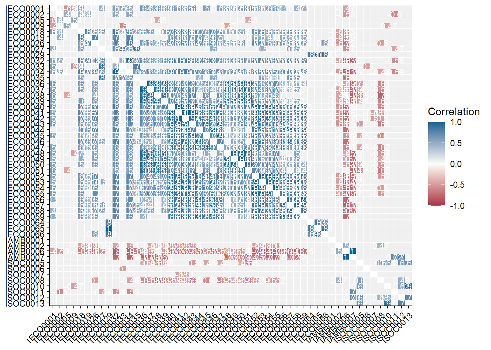
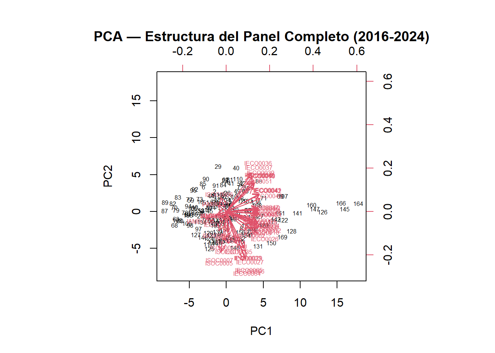
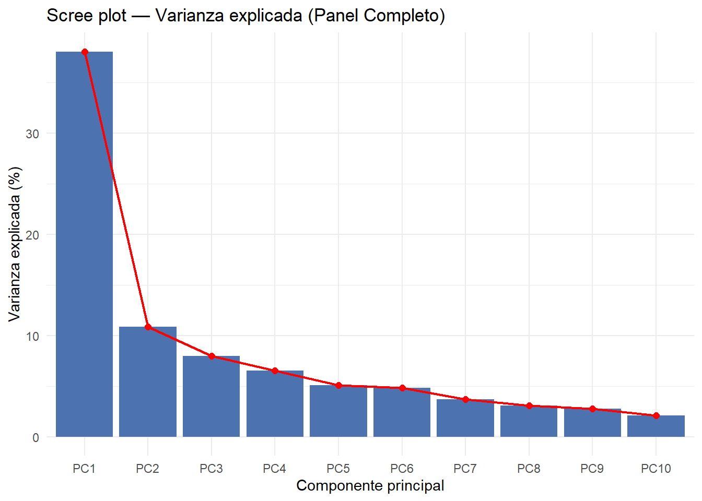
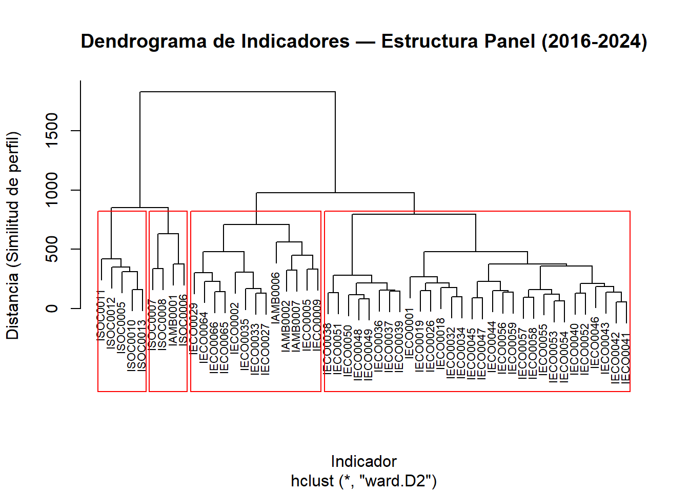
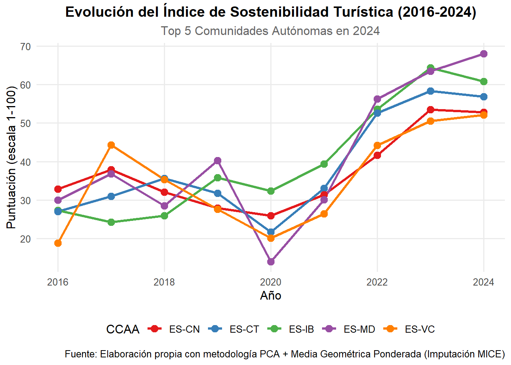
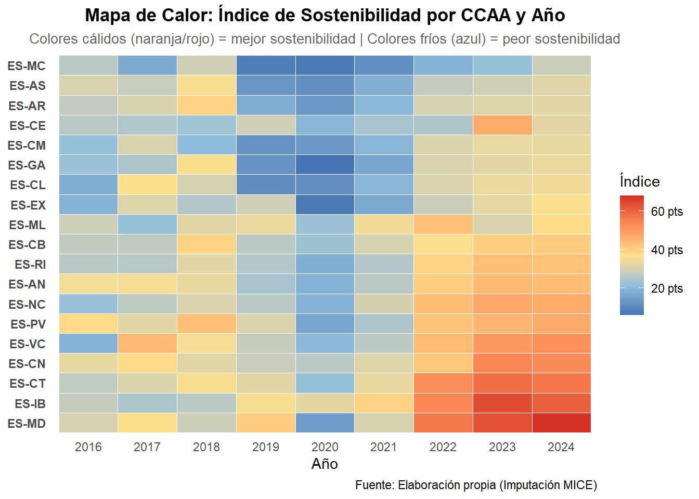
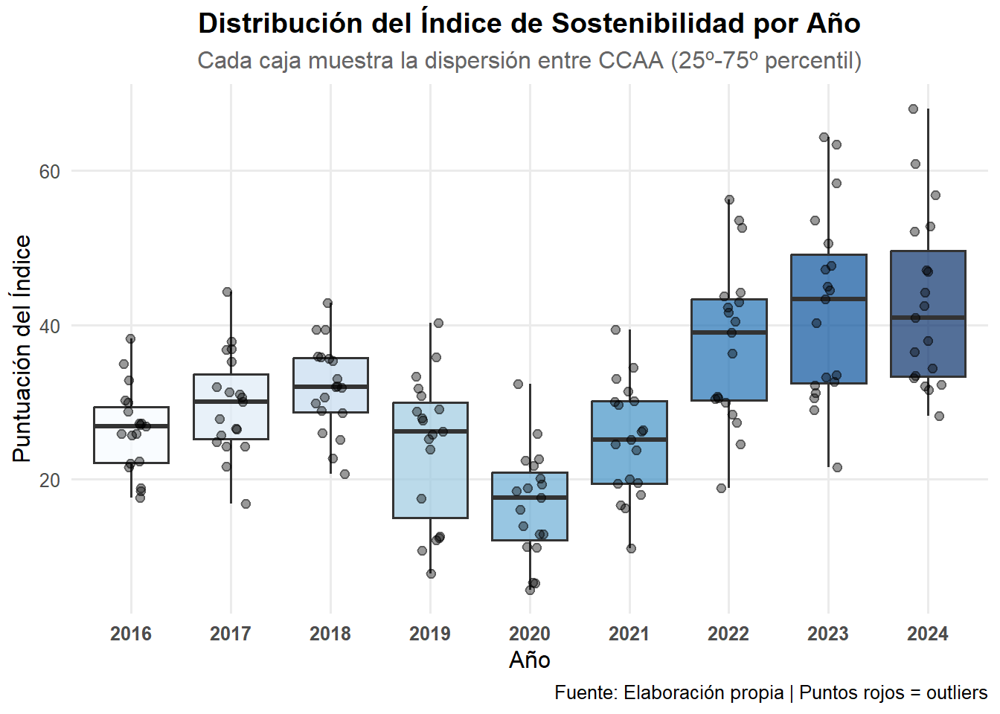
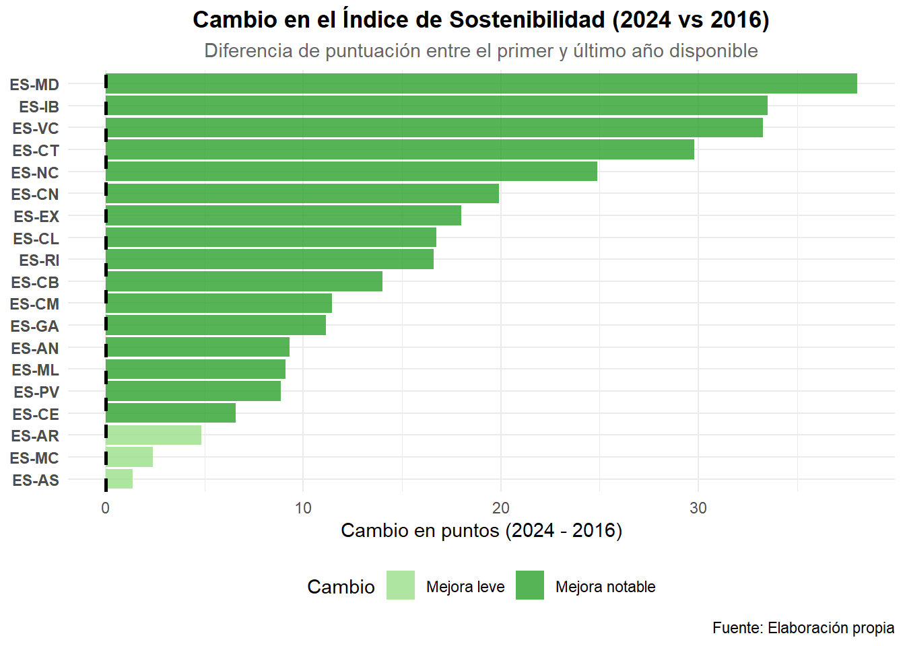
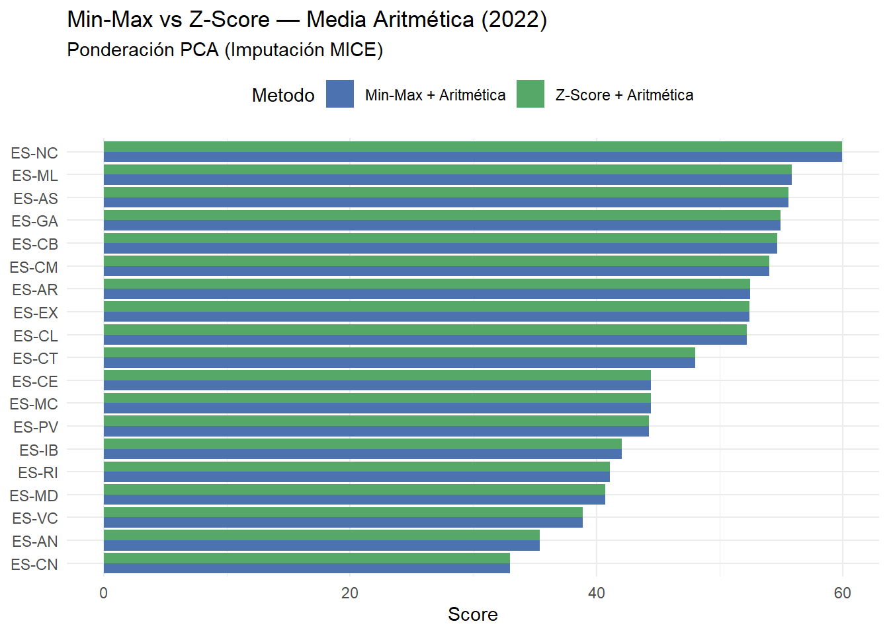

library(COINr)
library(dplyr)
library(tidyr)
library(lubridate)
library(ggplot2)
library(stringr)
library(Benchmarking)
library(mice)
library(scales)archivoFinal_ImpAmelia_con2020_MICE
Cargamos las librerías necesarias.
Cargamos los datos y los retocamos para que nos cuadre con la estructura que necesita COINr.
# Cargamos los 3 dfs: el de los valores, el de los metadatos y el df completo.
indicadores_calculados_final_ImpAmelia <- readRDS("~/MATEMÁTICAS URJC/CUARTO CURSO/TFG/tfg_composite_indicators/data/cindicators_ImpAmelia.rds")
indicators_ImpAmelia_meta_final <- readRDS("~/MATEMÁTICAS URJC/CUARTO CURSO/TFG/tfg_composite_indicators/data/indicators_ImpAmelia.rds")
df_indicadoresImpAmelia_completo_final <- readRDS("~/MATEMÁTICAS URJC/CUARTO CURSO/TFG/tfg_composite_indicators/data/df_indicadoresImpAmelia_completo.rds")
# Renombramos la columna valor, eliminamos la source_id que es la misma para todos y no aporta nada, quito 2025 (faltan datos de muchos indicadores)
indicadores_calculados_final_ImpAmelia <- indicadores_calculados_final_ImpAmelia |>
rename(value = indicator_value) |>
select(-source_id) |>
# Creamos el año y filtramos para quitar 2025
mutate(Year = year(as.Date(date))) |>
filter(Year != 2025)
# Verificamos cuántos indicadores tenemos en total
indicadores_activos_ImpAmelia <- indicadores_calculados_final_ImpAmelia %>%
pull(indicator_id) %>%
unique()
cat("Indicadores detectados:", length(indicadores_activos_ImpAmelia), "\n")Indicadores detectados: 58 iData
Es el df que tiene por columnas: uCode (que es nuestro código de cada región), Time (que son nuestros años) y todos los indicadores individuales. Por tanto, las filas son los valores que corresponden a cada región en cada año.
# Transformamos a formato ancho
iData_ImpAmelia <- indicadores_calculados_final_ImpAmelia %>%
mutate(Time = year(as.Date(date))) %>%
select(uCode = geo_id, Time, indicator_id, value) |>
pivot_wider(names_from = indicator_id, values_from = value)
# Paso los NaN a NA para tenerlo todo igual
iData_ImpAmelia[do.call(cbind, lapply(iData_ImpAmelia, is.nan))] <- NA
head(iData_ImpAmelia)# A tibble: 6 × 60
uCode Time IAMB0001 IAMB0002 IAMB0003 IAMB0004 IAMB0005 IAMB0006 IAMB0007
<chr> <dbl> <dbl> <dbl> <dbl> <dbl> <dbl> <dbl> <dbl>
1 ES-AN 2017 88.3 6.90 NA NA NA 79.7 20.3
2 ES-AR 2017 96.0 3.37 NA NA NA NA NA
3 ES-AS 2017 90.4 7.88 NA NA NA NA NA
4 ES-CB 2017 83.8 9.65 NA NA NA NA NA
5 ES-CE 2017 NA NA NA NA NA NA NA
6 ES-CL 2017 94.8 5.59 NA NA NA 18.5 81.5
# ℹ 51 more variables: IECO0001 <dbl>, IECO0002 <dbl>, IECO0005 <dbl>,
# IECO0009 <dbl>, IECO0012 <dbl>, IECO0013 <dbl>, IECO0018 <dbl>,
# IECO0019 <dbl>, IECO0026 <dbl>, IECO0027 <dbl>, IECO0029 <dbl>,
# IECO0032 <dbl>, IECO0033 <dbl>, IECO0034 <dbl>, IECO0035 <dbl>,
# IECO0036 <dbl>, IECO0037 <dbl>, IECO0038 <dbl>, IECO0039 <dbl>,
# IECO0040 <dbl>, IECO0041 <dbl>, IECO0042 <dbl>, IECO0043 <dbl>,
# IECO0044 <dbl>, IECO0045 <dbl>, IECO0046 <dbl>, IECO0047 <dbl>, …Ahora quiero ver de cuántos indicadores tengo datos por año y por región.
# Obtenemos los años únicos ordenados
anios <- sort(unique(iData_ImpAmelia$Time))
for(anio in anios){
cat("\n--- Indicadores que tienen datos en el año:", anio, "---\n")
res <- iData_ImpAmelia %>%
filter(Time == anio) %>%
rowwise() %>%
mutate(datos_reales = sum(!is.na(c_across(-c(uCode, Time))))) %>%
select(uCode, datos_reales)
print(res)
}
--- Indicadores que tienen datos en el año: 2016 ---
# A tibble: 20 × 2
# Rowwise:
uCode datos_reales
<chr> <int>
1 ES-AN 19
2 ES-AR 17
3 ES-AS 17
4 ES-CB 16
5 ES-CE 10
6 ES-CL 17
7 ES-CM 17
8 ES-CN 19
9 ES-CT 19
10 ES-EX 17
11 ES-GA 19
12 ES-IB 17
13 ES-MC 17
14 ES-MD 19
15 ES-ML 10
16 ES-NC 16
17 ES-PV 19
18 ES-RI 17
19 ES-VC 19
20 ESP 21
--- Indicadores que tienen datos en el año: 2017 ---
# A tibble: 20 × 2
# Rowwise:
uCode datos_reales
<chr> <int>
1 ES-AN 20
2 ES-AR 18
3 ES-AS 18
4 ES-CB 18
5 ES-CE 10
6 ES-CL 20
7 ES-CM 18
8 ES-CN 19
9 ES-CT 20
10 ES-EX 18
11 ES-GA 20
12 ES-IB 20
13 ES-MC 18
14 ES-MD 20
15 ES-ML 10
16 ES-NC 18
17 ES-PV 20
18 ES-RI 18
19 ES-VC 20
20 ESP 21
--- Indicadores que tienen datos en el año: 2018 ---
# A tibble: 20 × 2
# Rowwise:
uCode datos_reales
<chr> <int>
1 ES-AN 19
2 ES-AR 19
3 ES-AS 17
4 ES-CB 17
5 ES-CE 10
6 ES-CL 17
7 ES-CM 17
8 ES-CN 19
9 ES-CT 19
10 ES-EX 17
11 ES-GA 19
12 ES-IB 19
13 ES-MC 17
14 ES-MD 19
15 ES-ML 10
16 ES-NC 17
17 ES-PV 19
18 ES-RI 17
19 ES-VC 19
20 ESP 21
--- Indicadores que tienen datos en el año: 2019 ---
# A tibble: 20 × 2
# Rowwise:
uCode datos_reales
<chr> <int>
1 ES-AN 49
2 ES-AR 42
3 ES-AS 47
4 ES-CB 46
5 ES-CE 11
6 ES-CL 47
7 ES-CM 47
8 ES-CN 51
9 ES-CT 49
10 ES-EX 26
11 ES-GA 49
12 ES-IB 49
13 ES-MC 47
14 ES-MD 49
15 ES-ML 11
16 ES-NC 49
17 ES-PV 49
18 ES-RI 39
19 ES-VC 49
20 ESP 53
--- Indicadores que tienen datos en el año: 2020 ---
# A tibble: 20 × 2
# Rowwise:
uCode datos_reales
<chr> <int>
1 ES-AN 45
2 ES-AR 37
3 ES-AS 44
4 ES-CB 37
5 ES-CE 10
6 ES-CL 44
7 ES-CM 42
8 ES-CN 49
9 ES-CT 45
10 ES-EX 30
11 ES-GA 44
12 ES-IB 45
13 ES-MC 38
14 ES-MD 45
15 ES-ML 10
16 ES-NC 43
17 ES-PV 42
18 ES-RI 35
19 ES-VC 44
20 ESP 55
--- Indicadores que tienen datos en el año: 2021 ---
# A tibble: 20 × 2
# Rowwise:
uCode datos_reales
<chr> <int>
1 ES-AN 52
2 ES-AR 47
3 ES-AS 50
4 ES-CB 43
5 ES-CE 10
6 ES-CL 50
7 ES-CM 50
8 ES-CN 53
9 ES-CT 52
10 ES-EX 50
11 ES-GA 50
12 ES-IB 50
13 ES-MC 43
14 ES-MD 52
15 ES-ML 10
16 ES-NC 49
17 ES-PV 50
18 ES-RI 41
19 ES-VC 52
20 ESP 55
--- Indicadores que tienen datos en el año: 2022 ---
# A tibble: 20 × 2
# Rowwise:
uCode datos_reales
<chr> <int>
1 ES-AN 52
2 ES-AR 44
3 ES-AS 50
4 ES-CB 42
5 ES-CE 10
6 ES-CL 50
7 ES-CM 50
8 ES-CN 54
9 ES-CT 52
10 ES-EX 50
11 ES-GA 52
12 ES-IB 52
13 ES-MC 43
14 ES-MD 52
15 ES-ML 10
16 ES-NC 50
17 ES-PV 50
18 ES-RI 46
19 ES-VC 52
20 ESP 56
--- Indicadores que tienen datos en el año: 2023 ---
# A tibble: 20 × 2
# Rowwise:
uCode datos_reales
<chr> <int>
1 ES-AN 51
2 ES-AR 43
3 ES-AS 49
4 ES-CB 49
5 ES-CE 10
6 ES-CL 49
7 ES-CM 49
8 ES-CN 52
9 ES-CT 51
10 ES-EX 49
11 ES-GA 51
12 ES-IB 49
13 ES-MC 44
14 ES-MD 51
15 ES-ML 10
16 ES-NC 49
17 ES-PV 49
18 ES-RI 49
19 ES-VC 51
20 ESP 54
--- Indicadores que tienen datos en el año: 2024 ---
# A tibble: 20 × 2
# Rowwise:
uCode datos_reales
<chr> <int>
1 ES-AN 51
2 ES-AR 45
3 ES-AS 49
4 ES-CB 49
5 ES-CE 10
6 ES-CL 49
7 ES-CM 49
8 ES-CN 49
9 ES-CT 51
10 ES-EX 49
11 ES-GA 51
12 ES-IB 49
13 ES-MC 49
14 ES-MD 51
15 ES-ML 10
16 ES-NC 49
17 ES-PV 49
18 ES-RI 48
19 ES-VC 51
20 ESP 51resumen_disponibilidad <- iData_ImpAmelia %>%
pivot_longer(cols = -c(uCode, Time), names_to = "indicador", values_to = "valor") %>%
group_by(Time, uCode) %>%
summarise(total_datos = sum(!is.na(valor)), .groups = "drop") %>%
pivot_wider(names_from = Time, values_from = total_datos)
View(resumen_disponibilidad)Indicadores problemáticos
Estudiamos los indicadores que pueden darnos problemas, que son los que tengan varianza 0, es decir, los constantes. Para detectarlos podemos ver dónde min == max.
# Calculamos min y max por cada indicador y cada año
# Quitamos uCode porque al ser character nos puede dar error.
stats_ImpAmelia <- iData_ImpAmelia %>%
select(-uCode) %>%
group_by(Time) %>%
summarise(across(where(is.numeric), list(
min = ~min(.x, na.rm = TRUE),
max = ~max(.x, na.rm = TRUE)
), .names = "{.col}_{.fn}")) %>%
pivot_longer(
cols = -Time,
names_to = c("iCode", ".value"),
names_pattern = "(.*)_(.*)"
)
# Los que tienen min == max nos darán problemas (NaN) al normalizar
indicadores_con_problemas_ImpAmelia <- stats_ImpAmelia %>%
filter(min == max) %>%
select(Time, iCode, min, max)
print(indicadores_con_problemas_ImpAmelia, n=100)# A tibble: 29 × 4
Time iCode min max
<dbl> <chr> <dbl> <dbl>
1 2016 IAMB0003 1790688. 1790688.
2 2016 IAMB0005 19.9 19.9
3 2017 IAMB0003 1871010. 1871010.
4 2018 IAMB0003 1944853. 1944853.
5 2018 IAMB0005 21.8 21.8
6 2019 IAMB0003 1894067. 1894067.
7 2019 IECO0012 94.9 94.9
8 2019 IECO0013 4.72 4.72
9 2019 ISOC0004 88.6 88.6
10 2020 IAMB0002 1.70 1.70
11 2020 IAMB0005 23.7 23.7
12 2020 IAMB0006 74.2 74.2
13 2020 IAMB0007 25.8 25.8
14 2020 IECO0001 134. 134.
15 2020 IECO0002 1045. 1045.
16 2020 IECO0005 7.82 7.82
17 2020 IECO0012 94.2 94.2
18 2020 IECO0013 3.89 3.89
19 2020 ISOC0004 83.0 83.0
20 2021 IECO0012 97.7 97.7
21 2021 IECO0013 3.94 3.94
22 2021 ISOC0004 87.8 87.8
23 2022 IAMB0005 28.0 28.0
24 2022 IECO0012 112. 112.
25 2022 IECO0013 4.14 4.14
26 2022 ISOC0004 91.6 91.6
27 2023 IECO0012 121. 121.
28 2023 IECO0013 4.38 4.38
29 2023 ISOC0004 91.8 91.8 # Lista con los nombres únicos
nombres_problematicos_ImpAmelia <- indicadores_con_problemas_ImpAmelia %>%
pull(iCode) %>%
unique()
print("Indicadores a revisar:")[1] "Indicadores a revisar:"print(nombres_problematicos_ImpAmelia) [1] "IAMB0003" "IAMB0005" "IECO0012" "IECO0013" "ISOC0004" "IAMB0002"
[7] "IAMB0006" "IAMB0007" "IECO0001" "IECO0002" "IECO0005"INCLUYENDO 2020: nos dan problema 11 en total [1] “IAMB0003” “IAMB0005” “IECO0012” “IECO0013” “ISOC0004” “IAMB0002” “IAMB0006” [8] “IAMB0007” “IECO0001” “IECO0002” “IECO0005”
EXCLUYENDO 2020: [1] nos dan problema 5 en total (pero donde está IAMB0004? tambien habría que eliminarlo pq no tiene datos) [1] “IAMB0003” “IAMB0005” “IECO0012” “IECO0013” “ISOC0004”
Disponibilidad de datos por indicador
disponibilidad_ImpAmelia <- iData_ImpAmelia %>%
filter(uCode != "ESP") %>%
# Calculamos el % de datos no NA para cada columna (excepto uCode y Time)
summarise(across(-c(uCode, Time), ~ sum(!is.na(.x)) / n())) %>%
# Pasamos a formato largo para que sea una lista
pivot_longer(everything(), names_to = "iCode", values_to = "disponibilidad_ImpAmelia") %>%
# Lo multiplicamos por 100 para que sea porcentaje y redondeamos
mutate(disponibilidad_ImpAmelia_Pct = round(disponibilidad_ImpAmelia * 100, 2)) %>%
# Ordenamos para ver primero los que tienen menos datos
arrange(disponibilidad_ImpAmelia_Pct)
# Tabla completa
df_disponibilidad_ImpAmelia_datos <- as.data.frame(disponibilidad_ImpAmelia)
View(df_disponibilidad_ImpAmelia_datos)
# Indicadores que mantenemos: los que tengan más del 20% de datos disponibles
indicadores_a_mantener_ImpAmelia <- disponibilidad_ImpAmelia |> filter(disponibilidad_ImpAmelia_Pct>=20) |> pull(iCode)
# Vemos cuáles deberíamos eliminar:
eliminados_ImpAmelia <- disponibilidad_ImpAmelia |> filter(disponibilidad_ImpAmelia_Pct<20) |> pull(iCode)
print(paste("Indicadores eliminados_ImpAmelia por baja disponibilidad_ImpAmelia:", length(eliminados_ImpAmelia)))[1] "Indicadores eliminados_ImpAmelia por baja disponibilidad_ImpAmelia: 6"print(eliminados_ImpAmelia)[1] "IAMB0004" "IAMB0003" "IAMB0005" "IECO0012" "IECO0013" "ISOC0004"Con el filtro de eliminar los pct<20 [1] “Indicadores eliminados_ImpAmelia por baja disponibilidad_ImpAmelia incluyendo el año 2020 : 10” [1] “IAMB0004” “IECO0012” “IECO0013” “ISOC0004” “IAMB0005” “IAMB0003” “IAMB0002” [8] “IAMB0006” “IAMB0007” “IAMB0001”
[1] “Indicadores eliminados_ImpAmelia por baja disponibilidad_ImpAmelia excluyendo el año 2020 : 9. salvo a IAMB0002” [1] “IAMB0004” “IAMB0005” “IAMB0003” “IECO0012” “IECO0013” “ISOC0004” “IAMB0006” [8] “IAMB0007” “IAMB0001”
Eliminamos indicadores con baja disponibilidad
Eliminamos ahora los indicadores con baja disponibilidad
# Indicadores a eliminar (baja disponibilidad, pero mantengo 4 ambientales porque si no me quedo sin la dimensión ENV)
indicadores_eliminar <- c("IAMB0004", "IAMB0005", "IAMB0003", "IECO0012", "IECO0013", "ISOC0004")
# Filtramos iData eliminando esos indicadores
iData_clean <- iData_ImpAmelia %>%
select(-any_of(indicadores_eliminar))
# Verificación
print(paste("Indicadores restantes:", ncol(iData_clean) - 2)) # -2 por uCode y Time[1] "Indicadores restantes: 52"iMeta
Es el df de los metadatos, lo más importante es que contiene los códigos con los nombres completos y los pesos!! Como tenemos varios niveles para crear el IC, construimos el iMeta igual, en 3 niveles.
df <- indicators_ImpAmelia_meta_final %>%
select(-any_of("dimension_id")) %>%
left_join(
df_indicadoresImpAmelia_completo_final %>%
select(indicator_id, dimension_id) %>%
distinct(),
by = "indicator_id"
)
# --- NIVEL 1: INDICADORES ---
iMeta_L1 <- df %>%
select(
iCode = indicator_id,
iName = indicator_original_name,
Parent = dimension_id,
Direction = indicator_direction,
Weight = indicator_weight
) %>%
distinct(iCode, .keep_all = TRUE) %>%
# Filtramos los que hemos decidido eliminar por baja disponibilidad
filter(!iCode %in% indicadores_eliminar) %>%
mutate(
Direction = ifelse(Direction == "+", 1, -1),
Level = 1,
Type = "Indicator"
)
# --- NIVEL 2: DIMENSIONES ---
iMeta_L2 <- iMeta_L1 %>%
select(iCode = Parent) %>%
distinct() %>%
mutate(
iName = paste("Dimensión:", iCode),
Level = 2,
Parent = "TotalIndex",
Direction = 1,
Weight = 1,
Type = "Aggregate"
)
# --- NIVEL 3: ÍNDICE FINAL ---
iMeta_L3 <- data.frame(
iCode = "TotalIndex",
iName = "Índice Sintético Regional",
Level = 3,
Parent = NA,
Direction = 1,
Weight = 1,
Type = "Aggregate"
)
# --- UNIÓN FINAL ---
iMeta <- bind_rows(iMeta_L1, iMeta_L2, iMeta_L3)
glimpse(iMeta)Rows: 56
Columns: 7
$ iCode <chr> "IECO0001", "IECO0002", "IAMB0001", "IECO0005", "IAMB0002", …
$ iName <chr> "Gasto medio por turista receptor y día", "Gasto medio por t…
$ Parent <chr> "ECO", "ECO", "ENV", "ECO", "ENV", "ENV", "ENV", "ECO", "SOC…
$ Direction <dbl> 1, 1, 1, 1, 1, -1, 1, 1, 1, 1, 1, 1, 1, 1, 1, 1, 1, 1, 1, 1,…
$ Weight <dbl> 1, 1, 1, 1, 1, 1, 1, 1, 1, 1, 1, 1, 1, 1, 1, 1, 1, 1, 1, 1, …
$ Level <dbl> 1, 1, 1, 1, 1, 1, 1, 1, 1, 1, 1, 1, 1, 1, 1, 1, 1, 1, 1, 1, …
$ Type <chr> "Indicator", "Indicator", "Indicator", "Indicator", "Indicat…Purse I
purse <- new_coin(
iData = iData_clean,
iMeta = iMeta,
split_to = "all",
quietly = TRUE
)
purse-----------------------------
A purse with... 9 coins
-----------------------------
Time n_Units n_Inds n_dsets
2016 20 52 1
2017 20 52 1
2018 20 52 1
2019 20 52 1
2020 20 52 1
2021 20 52 1
2022 20 52 1
2023 20 52 1
2024 20 52 1
-----------------------------------
Sample from first coin (2016):
-----------------------------------
Input:
Units: 20 (ES-AN, ES-AR, ES-AS, ...)
Indicators: 52 (IECO0001, IECO0002, IECO0005, ...)
Denominators: 0 ()
Groups: 0 (none)
Structure:
Level 1 : 52 indicators (IECO0001, IECO0002, IECO0005, ...)
Level 2 : 3 groups (ECO, ENV, SOC)
Level 3 : 1 groups (TotalIndex)
Data sets:
Raw (20 units)Imputacion MICE
Estuve trabajando con imputación por la mediana, pero me daba demasiados errores, no se cubría casi ningún NA porque no teníamos suficientes datos. Con MICE se nos cubren TODOS los NA excepto los del indicador individual IAMB0007.
# 1. Preparar datos numéricos
df_raw <- get_dset(purse, dset = "Raw") #Extraemos los datos originales (Raw)
df_ids <- df_raw %>% select(uCode, Time) #Guardamos aparte las oclumnas de identificación (región y año)
df_numeric <- df_raw %>% select(-uCode, -Time) #Nos quedamos solo con las columnas de los indicadores. Y estas son las que MICE va a analizar para encontrar patrones.
# 2. Diagnóstico Pre-MICE
na_pre <- sum(is.na(df_numeric)) #Celdas vacías en total
total_cells <- prod(dim(df_numeric)) #Tamaño total de nuestra tabla
cat("PRE-MICE: ", na_pre, " NAs (", round(100 * na_pre / total_cells, 2), "%)\n")PRE-MICE: 3065 NAs ( 32.75 %)# 3. Ejecutar MICE (PMM)
#df_numeric son los datos a procesar, m=1 creamos una sola versión de datos imputados, método PMM: Predictive Mean Matching, busca valores reales existentes que cuadren según el perfil de la regón. Con maxit = 5, el algoritmo itera 5 veces para refinar sus predicciones. Fijamos seed 42.
mice_out <- mice(df_numeric, m = 1, method = "pmm", maxit = 5, seed = 42, printFlag = FALSE)
df_imputed <- complete(mice_out)
# 4. Diagnóstico Post-MICE con porcentaje
na_post <- sum(is.na(df_imputed)) #volvemos a contar los NA
cat("POST-MICE:", na_post, " NAs (", round(100 * na_post / total_cells, 2), "%)\n")POST-MICE: 118 NAs ( 1.26 %)# 5. ¿Qué se ha quedado sin imputar?
if(na_post > 0){
cols_con_na <- colSums(is.na(df_imputed))
print("Indicadores que siguen teniendo NAs:")
print(cols_con_na[cols_con_na > 0])
}[1] "Indicadores que siguen teniendo NAs:"
IAMB0007
118 # 6. Reconstruimos iData e integramos en el purse
iData_imputed_mice <- bind_cols(df_ids, df_imputed)
purse <- new_coin(
iData = iData_imputed_mice,
iMeta = iMeta,
split_to = "all",
quietly = TRUE
)
# Marcar datos como ya imputados en cada coin del purse
# (Los datos MICE ya están imputados, así que Imputed = Raw)
for(i in seq_along(purse$coin)){
purse$coin[[i]]$Data$Imputed <- purse$coin[[i]]$Data$Raw
}Ejemplo gráfico distribución indicador IECO0033 por año.
# 1. Sacamos los datos limpios de todo el panel
df_imputed <- get_dset(purse, dset = "Imputed")
# 2. Elegimos el indicador que queremos "investigar" (ej. IECO0033)
df_imputed %>%
select(uCode, Time, IECO0033) %>%
# 3. Hacemos un diagrama de densidad (como un histograma suavizado) para ver la "cola"
ggplot(aes(x = IECO0033, fill = as.factor(Time))) +
geom_density(alpha = 0.4) + # Alpha le da transparencia para ver los años superpuestos
theme_minimal() +
labs(
title = "Distribución del indicador IECO0033 (Todos los años)",
subtitle = "Viendo la asimetría y los valores extremos",
x = "Valor del Indicador",
y = "Densidad",
fill = "Año"
)
Outliers
He visto dos formas de estudiarlos. P ej el ARII (https://publications.jrc.ec.europa.eu/repository/handle/JRC131063) que es el Índice de Integración Regional de África analiza los valores de asimetría y curtosis para detectarlos, y los que superen los umbrales de skew>2 y kurtosis>3.5 simultáneamente, son outliers. Pero esto lo hace teniendo solo datos de un año (2019 en su caso). No sé si nosotros podríamos hacerlo del panel completo de la forma siguiente:
# =================================
# ANÁLISIS DE ASIMETRÍA Y CURTOSIS
# =================================
# 1. Extraemos el dataset del purse
df_imputed <- get_dset(purse, dset = "Imputed")
# 2. Seleccionamos SOLO las columnas numéricas (los indicadores)
# Quitamos uCode y Time para que no dé error
df_numeric <- df_imputed %>% select(-uCode, -Time)
# 3. Calculamos las estadísticas sobre los números
stats_indicators <- get_stats(df_numeric, out2 = "df")
# 4. Filtramos los indicadores problemáticos (|Skew| > 2 o Kurtosis > 3.5)
indicadores_problematicos <- stats_indicators %>%
select(iCode, Skew, Kurt) %>%
filter(abs(Skew) > 2 | Kurt > 3.5) %>%
arrange(desc(abs(Skew)))
# 5. Resultado
if(nrow(indicadores_problematicos) > 0) {
message("Indicadores con outliers que 'rompen' la normalización:")
print(indicadores_problematicos)
} else {
message("Todos los indicadores están dentro de los umbrales normales.")
} iCode Skew Kurt
1 ISOC0007 -2.680 7.19
2 ISOC0008 -2.320 4.97
3 IAMB0002 1.520 4.25
4 IECO0027 0.909 4.87
5 IECO0033 -0.171 4.30# Otra forma de ver outliers: zscore + ver quién se queda fuera del umbral
# Volvemos al dataset original con identificadores
df_long <- df_imputed %>%
pivot_longer(
cols = -c(uCode, Time),
names_to = "iCode",
values_to = "value"
)
# Calculamos z-score por indicador
df_outliers <- df_long %>%
group_by(iCode) %>%
mutate(
z = (value - mean(value, na.rm = TRUE)) / sd(value, na.rm = TRUE)
) %>%
ungroup() %>%
filter(abs(z) > 3) # umbral típico
# Resultado
print(df_outliers, n=74)# A tibble: 75 × 5
Time uCode iCode value z
<dbl> <chr> <chr> <dbl> <dbl>
1 2016 ES-CB ISOC0007 90.5 -3.41
2 2016 ES-EX IAMB0002 13.0 4.52
3 2017 ES-CB IAMB0002 9.65 3.02
4 2017 ES-PV ISOC0006 56.1 -3.48
5 2017 ES-VC ISOC0008 84.6 -3.70
6 2018 ES-AR ISOC0007 90.5 -3.41
7 2018 ES-AS ISOC0007 90.5 -3.41
8 2018 ES-CB IAMB0002 13.5 4.77
9 2019 ES-CN ISOC0008 84.6 -3.70
10 2019 ES-IB ISOC0008 81.6 -4.50
11 2019 ES-MD IECO0001 271. 3.11
12 2019 ES-ML IECO0046 144. 3.91
13 2020 ES-CT IECO0033 -22.4 -3.03
14 2020 ES-GA IECO0009 5.91 3.15
15 2020 ES-MD ISOC0007 90.5 -3.41
16 2020 ES-MD IECO0033 -28.8 -3.78
17 2021 ES-ML ISOC0007 90.5 -3.41
18 2022 ES-CN IECO0019 3.94 3.18
19 2022 ES-CT IECO0033 31.3 3.25
20 2022 ES-CT IECO0035 118. 3.13
21 2022 ES-CT IECO0027 24.4 3.77
22 2022 ES-IB IECO0066 7.11 3.06
23 2022 ES-MD IECO0001 281. 3.35
24 2022 ES-MD IECO0033 42.9 4.60
25 2022 ES-MD IECO0035 122. 3.26
26 2022 ES-MD IECO0027 31.5 5.10
27 2022 ES-ML ISOC0008 84.6 -3.70
28 2023 ES-AS ISOC0006 56.7 -3.30
29 2023 ES-IB IECO0019 4.10 3.46
30 2023 ES-IB IECO0040 176. 3.44
31 2023 ES-IB IECO0042 184 3.48
32 2023 ES-IB IECO0043 186. 3.33
33 2023 ES-IB IECO0044 131. 3.06
34 2023 ES-IB IECO0045 136. 3.33
35 2023 ES-IB IECO0046 137. 3.45
36 2023 ES-IB IECO0047 136. 3.46
37 2023 ES-IB IECO0052 186. 3.22
38 2023 ES-IB IECO0053 192. 3.22
39 2023 ES-IB IECO0054 195. 3.06
40 2023 ES-IB IECO0055 197. 3.04
41 2023 ES-IB IECO0059 146. 3.04
42 2023 ES-IB IECO0041 182. 3.42
43 2023 ES-IB IECO0026 172. 3.52
44 2023 ES-MC ISOC0006 55.1 -3.76
45 2023 ES-MD IECO0001 293. 3.63
46 2024 ES-CN IECO0032 135. 3.18
47 2024 ES-CN IECO0034 114. 3.55
48 2024 ES-CN IECO0026 170. 3.41
49 2024 ES-IB ISOC0007 85.8 -5.31
50 2024 ES-IB IECO0018 0.996 3.35
51 2024 ES-IB IECO0019 4.62 4.32
52 2024 ES-IB IECO0040 186. 3.89
53 2024 ES-IB IECO0042 194. 3.90
54 2024 ES-IB IECO0043 195. 3.72
55 2024 ES-IB IECO0044 140. 3.60
56 2024 ES-IB IECO0045 143. 3.74
57 2024 ES-IB IECO0046 144. 3.91
58 2024 ES-IB IECO0047 144. 3.94
59 2024 ES-IB IECO0052 197. 3.69
60 2024 ES-IB IECO0053 204. 3.70
61 2024 ES-IB IECO0054 208 3.57
62 2024 ES-IB IECO0055 209. 3.47
63 2024 ES-IB IECO0056 147. 3.10
64 2024 ES-IB IECO0057 152. 3.52
65 2024 ES-IB IECO0058 156. 3.57
66 2024 ES-IB IECO0059 157. 3.67
67 2024 ES-IB IECO0041 191. 3.84
68 2024 ES-IB IECO0026 185. 4.17
69 2024 ES-MC ISOC0006 57.6 -3.05
70 2024 ES-MD IECO0001 306. 3.94
71 2024 ES-MD IECO0002 1825. 3.07
72 2024 ES-MD IECO0018 0.978 3.22
73 2024 ES-MD IECO0032 135. 3.19
74 2024 ES-MD IECO0039 410. 3.28
# ℹ 1 more rowO mejor los tratamos con la función Treat() del paquete COINr. (Como a continuación) La diferencia es que Treat trata año a año. Por tanto, los outliers haciendo un análisis del panel general y los que se tratan en Treat() no me cuadran.
Tratamos
Con Treat() Cómo funciona “winsorise”: no elimina los outliers, sino que mueve el valor atípico hacia el valor máximo “aceptable” permitido. Winmax=5 es el número máximo de putos a winsorizar. Treat trata cada año del purse de forma independiente: entra en 1 año, mira la columna del indicador X (las 19 regiones), calcula la asimetría sólo con esos 19 datos y winsoriza si hace falta. Luego sigue con el siguiente año y repite el proceso. Riesgo de esto: perdemos la perspectiva histórica. Un outlier en 2016 puede ser un valor normal en 2024 p ej.
purse<- Treat(
purse,
dset = "Imputed",
f_t = "winsorise",
f_t_para = list(na.rm = TRUE,
winmax = 5, #es el limite por indicador y por año
skew_thresh = 2,
kurt_thresh = 3.5,
force_win = TRUE),
disable = FALSE
)df_before <- get_dset(purse, "Imputed")
df_after <- get_dset(purse, "Treated")
library(dplyr)
comparacion <- df_outliers %>%
select(uCode, Time, iCode) %>%
left_join(
df_before %>%
pivot_longer(-c(uCode, Time), names_to = "iCode", values_to = "before"),
by = c("uCode", "Time", "iCode")
) %>%
left_join(
df_after %>%
pivot_longer(-c(uCode, Time), names_to = "iCode", values_to = "after"),
by = c("uCode", "Time", "iCode")
)
print(comparacion,n=75)# A tibble: 75 × 5
uCode Time iCode before after
<chr> <dbl> <chr> <dbl> <dbl>
1 ES-CB 2016 ISOC0007 90.5 90.5
2 ES-EX 2016 IAMB0002 13.0 13.0
3 ES-CB 2017 IAMB0002 9.65 9.65
4 ES-PV 2017 ISOC0006 56.1 56.1
5 ES-VC 2017 ISOC0008 84.6 84.6
6 ES-AR 2018 ISOC0007 90.5 90.5
7 ES-AS 2018 ISOC0007 90.5 90.5
8 ES-CB 2018 IAMB0002 13.5 5.91
9 ES-CN 2019 ISOC0008 84.6 84.6
10 ES-IB 2019 ISOC0008 81.6 81.6
11 ES-MD 2019 IECO0001 271. 271.
12 ES-ML 2019 IECO0046 144. 144.
13 ES-CT 2020 IECO0033 -22.4 -22.4
14 ES-GA 2020 IECO0009 5.91 5.91
15 ES-MD 2020 ISOC0007 90.5 93.2
16 ES-MD 2020 IECO0033 -28.8 -28.8
17 ES-ML 2021 ISOC0007 90.5 98.8
18 ES-CN 2022 IECO0019 3.94 3.94
19 ES-CT 2022 IECO0033 31.3 31.3
20 ES-CT 2022 IECO0035 118. 118.
21 ES-CT 2022 IECO0027 24.4 24.4
22 ES-IB 2022 IECO0066 7.11 7.11
23 ES-MD 2022 IECO0001 281. 281.
24 ES-MD 2022 IECO0033 42.9 42.9
25 ES-MD 2022 IECO0035 122. 122.
26 ES-MD 2022 IECO0027 31.5 31.5
27 ES-ML 2022 ISOC0008 84.6 94.2
28 ES-AS 2023 ISOC0006 56.7 56.7
29 ES-IB 2023 IECO0019 4.10 4.10
30 ES-IB 2023 IECO0040 176. 176.
31 ES-IB 2023 IECO0042 184 184
32 ES-IB 2023 IECO0043 186. 186.
33 ES-IB 2023 IECO0044 131. 131.
34 ES-IB 2023 IECO0045 136. 136.
35 ES-IB 2023 IECO0046 137. 137.
36 ES-IB 2023 IECO0047 136. 136.
37 ES-IB 2023 IECO0052 186. 186.
38 ES-IB 2023 IECO0053 192. 192.
39 ES-IB 2023 IECO0054 195. 195.
40 ES-IB 2023 IECO0055 197. 197.
41 ES-IB 2023 IECO0059 146. 146.
42 ES-IB 2023 IECO0041 182. 182.
43 ES-IB 2023 IECO0026 172. 172.
44 ES-MC 2023 ISOC0006 55.1 55.1
45 ES-MD 2023 IECO0001 293. 293.
46 ES-CN 2024 IECO0032 135. 135.
47 ES-CN 2024 IECO0034 114. 114.
48 ES-CN 2024 IECO0026 170. 170.
49 ES-IB 2024 ISOC0007 85.8 98.1
50 ES-IB 2024 IECO0018 0.996 0.996
51 ES-IB 2024 IECO0019 4.62 4.62
52 ES-IB 2024 IECO0040 186. 186.
53 ES-IB 2024 IECO0042 194. 194.
54 ES-IB 2024 IECO0043 195. 195.
55 ES-IB 2024 IECO0044 140. 140.
56 ES-IB 2024 IECO0045 143. 143.
57 ES-IB 2024 IECO0046 144. 144.
58 ES-IB 2024 IECO0047 144. 144.
59 ES-IB 2024 IECO0052 197. 197.
60 ES-IB 2024 IECO0053 204. 204.
61 ES-IB 2024 IECO0054 208 208
62 ES-IB 2024 IECO0055 209. 209.
63 ES-IB 2024 IECO0056 147. 147.
64 ES-IB 2024 IECO0057 152. 152.
65 ES-IB 2024 IECO0058 156. 156.
66 ES-IB 2024 IECO0059 157. 157.
67 ES-IB 2024 IECO0041 191. 191.
68 ES-IB 2024 IECO0026 185. 185.
69 ES-MC 2024 ISOC0006 57.6 57.6
70 ES-MD 2024 IECO0001 306. 306.
71 ES-MD 2024 IECO0002 1825. 1825.
72 ES-MD 2024 IECO0018 0.978 0.978
73 ES-MD 2024 IECO0032 135. 135.
74 ES-MD 2024 IECO0039 410. 410.
75 ES-NC 2024 ISOC0006 56.1 56.1 #estos son los que ha tratado la funcion Treat()
comparacion %>% filter(before != after)# A tibble: 5 × 5
uCode Time iCode before after
<chr> <dbl> <chr> <dbl> <dbl>
1 ES-CB 2018 IAMB0002 13.5 5.91
2 ES-MD 2020 ISOC0007 90.5 93.2
3 ES-ML 2021 ISOC0007 90.5 98.8
4 ES-ML 2022 ISOC0008 84.6 94.2
5 ES-IB 2024 ISOC0007 85.8 98.1 Filtramos la tabla de comparación para ver solo donde hubo winsorizacion.
filas_cambiadas <- comparacion %>%
filter(before != after)
print(filas_cambiadas)# A tibble: 5 × 5
uCode Time iCode before after
<chr> <dbl> <chr> <dbl> <dbl>
1 ES-CB 2018 IAMB0002 13.5 5.91
2 ES-MD 2020 ISOC0007 90.5 93.2
3 ES-ML 2021 ISOC0007 90.5 98.8
4 ES-ML 2022 ISOC0008 84.6 94.2
5 ES-IB 2024 ISOC0007 85.8 98.1 # Contamos cuántos indicadores diferentes han sido afectados
resumen_cambios <- filas_cambiadas %>%
group_by(iCode) %>%
summarise(Num_Veces_Winsorizado = n())
print(resumen_cambios)# A tibble: 3 × 2
iCode Num_Veces_Winsorizado
<chr> <int>
1 IAMB0002 1
2 ISOC0007 3
3 ISOC0008 1Normalización min-max [1,100]
Ponemos el 1 aposta porque si ponemos de 0-100, el 0 nos puede dar problema en la media geométrica.
purse <- Normalise(
purse,
dset = "Treated",
normalise_by = "all",
f_n = "n_minmax",
f_n_para = list(l_u = c(1, 100))
)ANÁLISIS MULTIVARIANTE
Correlaciones entre indicadores individuales año 2022 como ejemplo
Elijo el año 2022 como ejemplo porque es el año del que más datos tenemos.
coin_2022 <- purse$coin[[which(purse$Time == 2022)]]
plot_corr(
coin_2022,
dset = "Normalised",
grouplev = 3, #ojo, sale diferente cn 2 que con 3, mirar bien que significa
flagging = TRUE,
cortype = "pearson"
)
Conclusiones viendo el gráfico:
Cohesión en la dimensión ECO: se observa un bloque densamente correlacionado en los indicadores IECO… (valores de r>0.80). Esto indica que el desarrollo económico en las CCAA tiende a ser multidimensional y sinérgico; sin embargo, la presencia de correlaciones cercanas a 1 entre ciertos indicadores sugiere una alta redundancia informativa que debe ser considerada en la ponderación final.
Independencia de las dimensiones SOC y ENV: a diferencia del bloque económico, los indicadores ISOC… e IAMB… presentan una baja correlación inter-dimensional y entre ellos mismos. Esto valida su inclusión en el modelo, ya que aportan información única y no redundante que los indicadores económicos no son capaces de capturar por sí solos.
Trade-offs y conflictos de sostenibilidad: la aparición de correlaciones negativas (tonos rojizos) en cruces específicos entre indicadores de crecimiento económico y sostenibilidad social/ambiental sugiere la existencia de “conflictos de objetivos”. Estos puntos son críticos para el análisis, ya que identifican áreas donde el progreso económico podría estar comprometiendo otros pilares del bienestar.
Validez del enfoque multidimensional: la heterogeneidad de colores y la presencia de amplias zonas de baja correlación confirman que el fenómeno analizado es complejo y que un ranking basado únicamente en variables económicas sería insuficiente para captar la realidad de la sostenibilidad regional en España.
PCA y clustering para todo el panel
Análisis exploratorio. Hacemos PCA sobre el panel completo apilado (todas las CCAA x tods los años) para entender la estructura de los datos y ver cuánta varianza explica la PC1. También hacemos clustering jerárquico (dendrograma) para ver cómo se agrupan los indicadores. (Aquí todavía no guardamos los pesos en los metadatos del índice, sólo es exploratorio).
## PCA — PANEL COMPLETO CON DIAGNÓSTICO DE ELIMINACIÓN
# 1. Extraer datos iniciales
df_norm_panel <- get_dset(purse, dset = "Normalised") %>%
filter(uCode != "ESP")
# Guardamos los nombres iniciales para comparar
nombres_iniciales <- names(df_norm_panel %>% select(where(is.numeric)) %>% select(-any_of("Time")))
# --- PASO A: Identificar indicadores TODO NA ---
indicadores_todo_na <- nombres_iniciales[sapply(df_norm_panel[nombres_iniciales], function(x) all(is.na(x)))]
# --- PASO D: Identificar indicadores CONSTANTES (Sin varianza) ---
# Primero imputamos temporalmente para poder calcular la varianza sin que los NAs molesten
df_temp <- df_norm_panel %>%
mutate(across(everything(), ~ ifelse(is.na(.x), median(.x, na.rm = TRUE), .x)))
indicadores_constantes <- nombres_iniciales[sapply(df_temp[nombres_iniciales], function(x) var(x, na.rm = TRUE) <= 1e-10)]
# --- INFORME DE ELIMINACIÓN ---
cat("════ REPORT DE LIMPIEZA PCA ════\n")════ REPORT DE LIMPIEZA PCA ════cat("Indicadores iniciales: ", length(nombres_iniciales), "\n")Indicadores iniciales: 52 if(length(indicadores_todo_na) > 0) {
cat("\n ELIMINADOS POR SER TODO NA:\n", paste(indicadores_todo_na, collapse = ", "), "\n")
} else {
cat("\n Ningún indicador es totalmente NA.\n")
}
Ningún indicador es totalmente NA.if(length(indicadores_constantes) > 0) {
cat("\n ELIMINADOS POR VARIANZA CERO (Constantes):\n", paste(indicadores_constantes, collapse = ", "), "\n")
} else {
cat("\n Ningún indicador es constante.\n")
}
Ningún indicador es constante.# 2. Preparación final de la matriz (ya sabiendo qué quitamos)
df_pca_panel <- df_norm_panel %>%
select(all_of(nombres_iniciales)) %>%
select(-any_of(c(indicadores_todo_na, indicadores_constantes))) %>%
# Imputación de rescate para los 136 NAs residuales de MICE
mutate(across(everything(), ~ ifelse(is.na(.x), median(.x, na.rm = TRUE), .x)))
cat("\n✓ Indicadores finales para PCA: ", ncol(df_pca_panel), "\n")
✓ Indicadores finales para PCA: 52 cat("════════════════════════════════\n")════════════════════════════════# 3. Ejecución del PCA
pca_result_panel <- prcomp(df_pca_panel, center = TRUE, scale. = TRUE)
print(pca_result_panel)Standard deviations (1, .., p=52):
[1] 4.44805426 2.37725975 2.03405189 1.84228717 1.62307078 1.58594147
[7] 1.38637609 1.26075076 1.20274945 1.03827791 1.01506635 0.94847362
[13] 0.82785013 0.81384372 0.75637085 0.70145665 0.68325500 0.63484965
[19] 0.60195422 0.58571767 0.51635228 0.49024304 0.46402725 0.41972847
[25] 0.39336671 0.37433391 0.35467291 0.34173796 0.26632603 0.24665026
[31] 0.23113830 0.21321865 0.20043575 0.19356679 0.17493053 0.15678203
[37] 0.14387787 0.13315312 0.12865681 0.11086847 0.10974200 0.09904616
[43] 0.08871046 0.07926434 0.07363372 0.06891819 0.06669024 0.06055517
[49] 0.05509826 0.04551142 0.04070145 0.03962137
Rotation (n x k) = (52 x 52):
PC1 PC2 PC3 PC4 PC5
IECO0001 0.14132892 -0.045140693 0.0353860268 -0.044080479 6.245430e-02
IECO0002 0.11580043 -0.108882197 0.0619271152 0.120789926 9.173493e-02
IAMB0001 -0.04877220 0.036575916 -0.0201300396 0.158630993 -7.070378e-02
IECO0005 -0.03993628 -0.058813023 0.0005127136 0.174815287 3.146460e-02
IAMB0002 -0.05743075 -0.019494944 -0.0509726848 -0.065037050 -1.799696e-01
IAMB0006 -0.11792946 -0.042778018 0.1424113474 -0.136204109 2.558589e-02
IAMB0007 -0.05557337 -0.017686461 0.0409697955 -0.083610041 -3.566892e-02
IECO0009 -0.04767295 -0.018092343 0.0099937634 0.114611487 3.016815e-01
ISOC0005 -0.03217749 -0.235837189 -0.1690316127 -0.251341657 3.482748e-03
ISOC0006 -0.03338929 0.080559204 -0.1786228342 0.130803214 -1.292402e-01
ISOC0007 -0.03061410 -0.223475636 0.0108811910 -0.101363269 1.725944e-01
ISOC0008 -0.04432609 -0.110015728 0.1017988797 -0.055429818 -1.569550e-01
IECO0018 0.18108965 -0.093446255 0.0533841386 0.025477794 1.094808e-01
IECO0019 0.14458988 -0.097499049 0.0484499639 0.088542392 2.491172e-01
ISOC0010 0.01744535 -0.134223262 -0.0663146313 -0.370884390 -7.616856e-02
IECO0032 0.18950910 -0.084827516 0.0365938137 0.096571817 8.017508e-02
IECO0033 0.09846722 -0.212313570 0.1620621847 0.166082483 -1.377103e-01
IECO0034 0.18145609 -0.063205918 0.0080519437 0.093322041 1.141875e-01
IECO0035 0.05628408 -0.184059631 0.1869891521 0.216097515 -1.318166e-01
ISOC0011 0.01215810 -0.114404631 -0.0460925002 -0.302959019 2.007870e-01
ISOC0012 -0.01063421 -0.165176503 -0.0751969309 -0.234383063 -3.103371e-01
IECO0036 0.14615704 0.224414769 0.1520899086 -0.162224251 7.675623e-05
IECO0037 0.14939655 0.203315377 0.2287731900 -0.084023079 -7.686541e-02
IECO0038 0.14797524 0.170288982 0.1653628284 -0.163181704 1.773654e-01
IECO0039 0.15869934 0.179779263 0.1828880327 -0.141412573 1.653390e-02
IECO0040 0.19347505 0.073829943 -0.1076008713 0.031615946 3.107966e-02
IECO0042 0.19020951 0.097964589 0.0032545742 0.101015300 -6.544726e-02
IECO0043 0.18790863 0.099524194 -0.0178334339 0.043208405 1.373177e-01
IECO0044 0.16595668 -0.040173381 -0.2503621603 -0.017559739 4.273233e-02
IECO0045 0.17306062 -0.010313852 -0.1068298872 -0.049918644 2.422691e-01
IECO0046 0.17916608 0.013649413 -0.0831013486 0.095521807 -1.869492e-01
IECO0047 0.17969776 0.020784181 -0.0504639837 -0.034189110 2.089889e-01
IECO0048 0.15850497 0.167063369 0.1614077474 -0.148862212 -1.453408e-01
IECO0049 0.16227467 0.167380266 0.1705245678 -0.086846433 -1.954605e-01
IECO0050 0.16209593 0.164559660 0.1852950061 -0.095152435 -1.057485e-01
IECO0051 0.14921467 0.141779415 0.1251301969 -0.182980847 8.228742e-02
IECO0052 0.18589192 0.017615456 -0.1784011147 -0.009668410 -2.202145e-02
IECO0053 0.19045752 -0.014437553 -0.1690091953 0.029487895 -1.382208e-01
IECO0054 0.18751423 0.006618909 -0.1349636629 0.035799225 -1.771021e-01
IECO0055 0.18712173 -0.007585134 -0.1620510263 0.022555331 -1.999653e-01
IECO0056 0.15110085 -0.063094130 -0.2690963058 -0.085238063 9.594101e-02
IECO0057 0.17066260 -0.076968799 -0.2491770663 -0.013135685 -1.152512e-01
IECO0058 0.17277471 -0.051572477 -0.1788346744 -0.003973212 -2.212121e-01
IECO0059 0.17783858 -0.071526335 -0.1778027705 -0.007576381 1.794430e-01
IECO0041 0.19042060 0.100802116 -0.0045603383 0.104001830 -6.810408e-02
IECO0026 0.17753893 -0.124192288 0.0754990017 0.076783718 1.184532e-01
IECO0027 0.10948076 -0.231585558 0.1619876311 0.156880747 -1.097638e-01
ISOC0013 0.01249080 -0.183357452 -0.0179500242 -0.400267917 -4.405055e-02
IECO0066 0.11235793 -0.274303421 0.1904778667 0.016648843 -2.636631e-02
IECO0065 0.10438678 -0.268194405 0.1861981326 -0.044954871 -3.039964e-02
IECO0064 0.09521195 -0.284062890 0.2239279807 0.058524815 -7.363850e-02
IECO0029 0.10266572 -0.212409225 0.1603230697 -0.100968122 2.263377e-02
PC6 PC7 PC8 PC9 PC10
IECO0001 -0.1350557267 0.281712483 -0.23076645 0.171925389 -0.0997365121
IECO0002 0.0576664183 0.219563118 0.30193553 -0.097781159 -0.0367273350
IAMB0001 -0.3956603247 -0.143153047 -0.10258160 -0.190777444 -0.0182611425
IECO0005 0.2234331576 -0.057903583 0.53824866 -0.292692765 0.0140302758
IAMB0002 0.0312370329 -0.339468746 0.26751742 0.040687443 -0.2766949471
IAMB0006 0.1384965202 -0.297642621 -0.11185087 0.048179863 0.1986994032
IAMB0007 -0.0586175151 -0.247809298 -0.13930426 -0.094880966 0.6851263260
IECO0009 0.3268475063 -0.050346639 0.18068016 -0.168652905 0.0974751307
ISOC0005 -0.0327305755 0.232397221 -0.02228991 -0.158860537 0.1118824577
ISOC0006 -0.1871967733 0.102516906 0.10667879 -0.100162523 0.4184481096
ISOC0007 -0.1964750587 0.008576968 0.17732292 0.302539389 0.1879798256
ISOC0008 0.2005325938 -0.081360641 0.02280242 0.271860016 0.0724922714
IECO0018 0.0311603758 0.230887095 -0.14866163 -0.012779843 0.0615167388
IECO0019 0.2065593481 0.170219427 -0.01723860 -0.122985508 0.1537483286
ISOC0010 0.0155147713 0.123045139 -0.09106925 -0.409926664 -0.0423016544
IECO0032 -0.0488738850 0.176017244 0.02650121 0.108264002 0.0288913265
IECO0033 -0.2553260053 -0.024815950 0.03851015 -0.148837326 -0.0580532262
IECO0034 -0.0498914618 0.212148888 0.04803700 0.077978169 0.0422735835
IECO0035 -0.2620586274 -0.048093780 0.01771308 -0.185904442 0.0003886784
ISOC0011 -0.2311427240 -0.083280033 0.12178559 0.039008044 0.0457238462
ISOC0012 0.1311399934 0.070511745 0.15999447 -0.019833405 0.0573402906
IECO0036 -0.0583856088 0.026620371 0.14564357 -0.062290147 0.0430159608
IECO0037 0.0531120918 0.098050353 0.00332611 -0.083472614 -0.0158777751
IECO0038 -0.1275776277 -0.074020115 0.07153987 -0.084366897 -0.0546588581
IECO0039 -0.0665569418 0.068098973 0.09330875 -0.041238344 0.0677992423
IECO0040 0.0706489297 -0.082137957 -0.07155331 -0.145061956 0.0042500539
IECO0042 0.1506214147 -0.078274499 -0.17564671 -0.106385452 0.0152334088
IECO0043 0.0392480847 -0.171695026 -0.13694293 -0.101141568 -0.0322301306
IECO0044 0.0034986936 -0.126641918 0.10501931 -0.026537342 0.0739137633
IECO0045 -0.0622157120 -0.238079336 -0.02694811 -0.052559316 -0.0318884836
IECO0046 0.1720674893 -0.034745903 -0.08136029 0.017797081 0.1390351700
IECO0047 -0.0059039436 -0.237461035 -0.10676289 -0.085436021 -0.0589321250
IECO0048 -0.0033635993 0.058244074 0.12858551 0.015834424 0.0659139057
IECO0049 0.0275003475 0.009269337 0.10134088 0.052193358 0.0732741203
IECO0050 -0.0195337806 -0.005738236 0.08876149 0.102593082 0.0824889953
IECO0051 -0.1762461434 -0.087835238 0.20570615 0.073367067 -0.0294939938
IECO0052 0.0288665694 -0.096021252 0.02358523 0.031910857 -0.0371454312
IECO0053 0.0319775576 -0.020329735 -0.01370880 0.004281669 -0.0427456216
IECO0054 0.0328699669 -0.032903407 -0.03317905 -0.007189500 -0.0710773511
IECO0055 0.0009250786 -0.028178866 0.05860863 0.097654533 0.0390447480
IECO0056 -0.1129360860 -0.102454263 0.16318575 0.125015545 0.0048556084
IECO0057 -0.0249542890 0.016477470 0.07428089 0.099621682 0.0138547651
IECO0058 0.0135236401 0.076594281 0.02961965 0.071326786 0.0651226279
IECO0059 -0.0825441670 -0.115264922 -0.03309127 0.071425391 -0.0580191672
IECO0041 0.1458077752 -0.066847890 -0.18492210 -0.103231082 0.0113820294
IECO0026 0.0622954961 0.054539425 0.07563189 0.039919357 0.1613310587
IECO0027 -0.1759302371 -0.069147050 0.03331333 -0.139437191 -0.0447996072
ISOC0013 0.0744222039 0.042747650 -0.10829526 -0.320825361 -0.1310079218
IECO0066 0.0450050972 -0.133685202 -0.04017424 0.010100714 0.0118245225
IECO0065 0.0921907771 -0.144024300 -0.02976719 0.089237084 -0.0443985080
IECO0064 -0.0258736882 -0.141752941 -0.03443665 -0.018055416 -0.0224918110
IECO0029 0.2352430205 -0.053151942 -0.08407550 0.235211347 -0.0352600358
PC11 PC12 PC13 PC14 PC15
IECO0001 0.347723463 -0.0389884047 0.0286329319 -0.070751518 0.066372291
IECO0002 0.400574976 -0.2056874407 -0.1544805229 -0.258059584 -0.020823077
IAMB0001 0.039448396 0.2264137860 -0.1896091598 0.186902464 0.036023868
IECO0005 0.105172282 -0.1271524823 -0.2459303252 -0.186343861 -0.045498997
IAMB0002 0.294405210 -0.0645908053 0.4300711174 0.402085061 0.176441530
IAMB0006 0.208862079 -0.1485937666 -0.0202703844 -0.008929300 0.163720761
IAMB0007 0.215421417 -0.1856249509 -0.2178562771 0.195660388 -0.068424115
IECO0009 -0.260064313 0.2617482017 0.0993216090 0.230576490 0.050689608
ISOC0005 -0.107678954 0.1250358127 0.1790276476 -0.100001969 0.176309086
ISOC0006 -0.005683272 -0.0737917794 0.6045402562 -0.343070602 0.085215266
ISOC0007 -0.138864143 0.0619565208 -0.2207529013 0.034628001 0.398631890
ISOC0008 0.238352893 0.6088539638 -0.0504231664 -0.219736671 0.146640774
IECO0018 0.174754141 0.0656067325 0.0024809182 0.045603454 -0.048529962
IECO0019 -0.033770632 0.2063446792 0.0681969452 0.194683116 -0.048456925
ISOC0010 -0.038257640 -0.0909327386 -0.0774445161 -0.048919028 0.207072174
IECO0032 0.125157489 -0.0410977242 0.0861124674 0.233093747 0.087823814
IECO0033 0.061206235 0.0628917666 -0.0174238809 0.049910554 -0.039508495
IECO0034 0.133097764 -0.0980844216 0.1031825177 0.262552893 0.007479910
IECO0035 -0.034244892 0.2248669002 -0.0552116431 -0.076553001 0.075486469
ISOC0011 -0.132187143 0.0441983488 0.0062446020 -0.060534547 -0.562745434
ISOC0012 0.181051945 0.2015875201 -0.0047857617 0.175575314 -0.301214623
IECO0036 0.105880536 0.0785853223 0.0570986773 0.006906020 -0.075525053
IECO0037 -0.085685427 0.0047830656 -0.0347501745 0.066188665 0.100546475
IECO0038 0.032256830 -0.0027264010 -0.0003015697 -0.029256735 0.103680654
IECO0039 0.013315870 0.0181618316 0.0137619993 0.086156120 0.047257050
IECO0040 -0.027098595 0.0594121149 -0.0412601691 -0.079491210 0.206298115
IECO0042 0.004825178 0.0243523856 -0.0152975768 -0.035204004 -0.070747677
IECO0043 0.120373580 0.0975694558 0.0891915445 -0.132840273 -0.136188480
IECO0044 0.056676006 0.0481415864 -0.0413147792 -0.051340784 0.228301348
IECO0045 0.099860074 0.0116477291 0.0532533774 -0.027893029 0.062311611
IECO0046 0.051737260 0.0596297589 -0.0349271217 -0.009343555 -0.103570212
IECO0047 0.128052860 -0.0140126455 0.0523572235 -0.059021486 0.029394478
IECO0048 -0.117791015 -0.0029488172 -0.0147764994 -0.006805528 0.086748744
IECO0049 -0.108718858 -0.0004161658 0.0329670825 -0.025732676 0.054644956
IECO0050 -0.057597849 0.1179616557 0.0709980486 -0.068132254 -0.104588623
IECO0051 -0.055839747 -0.0137366460 -0.0764575817 -0.032846592 0.042517079
IECO0052 -0.102604344 0.1150349179 -0.0178430715 -0.138957429 0.050515314
IECO0053 -0.176169747 -0.1117210405 -0.1442614197 0.034287484 0.085214112
IECO0054 -0.115592585 -0.1593032784 -0.1189127891 0.067260997 0.091119086
IECO0055 -0.080506665 -0.0014249727 -0.0609468930 -0.013861389 -0.079957480
IECO0056 0.064258677 0.0925582225 0.0093032070 -0.062435530 -0.059614259
IECO0057 -0.034663616 -0.0491600280 -0.1074716911 0.075540005 -0.011987334
IECO0058 -0.020487009 -0.0725192697 -0.0715548431 0.156967267 -0.044390128
IECO0059 -0.003056663 0.0512257969 0.0114027363 -0.039343676 -0.106276588
IECO0041 0.035629564 0.0510448924 0.0274963569 -0.037562598 -0.033980558
IECO0026 -0.143563550 -0.0422879505 0.0912726548 0.232038706 -0.017606343
IECO0027 -0.006536830 0.0910736372 0.0122949885 0.021642257 -0.021595211
ISOC0013 0.069984401 0.0530930591 0.0233215782 0.067409502 0.016718134
IECO0066 -0.179268735 -0.1134067271 0.1538531680 -0.038200411 -0.009215042
IECO0065 -0.106444523 -0.2001771955 0.1405726873 -0.102673881 -0.082340276
IECO0064 -0.122735606 -0.0844920405 0.0941811434 -0.113962819 -0.017718376
IECO0029 -0.018193955 -0.1195501485 -0.0453929565 -0.149349049 0.034690099
PC16 PC17 PC18 PC19 PC20
IECO0001 -0.002824782 -0.207409414 0.261387441 -0.169897637 0.067568915
IECO0002 0.170261580 -0.126550562 0.161746658 -0.034688208 0.051889208
IAMB0001 0.526547934 -0.264390863 -0.120642429 0.232108994 0.349242521
IECO0005 0.076648150 0.102285946 -0.124765304 0.115414481 0.063585024
IAMB0002 0.104740099 0.116907823 0.193065273 -0.110574437 0.084773814
IAMB0006 -0.282169362 -0.369598542 0.118885912 0.099409687 0.190822220
IAMB0007 0.073117697 0.315363499 0.061258238 -0.134871382 -0.040991598
IECO0009 -0.078385445 -0.269815472 0.228547505 -0.029698706 -0.045414895
ISOC0005 0.036321243 0.149926348 -0.105397240 0.055523584 0.242914702
ISOC0006 0.090131889 -0.146659718 0.063106846 0.143218059 -0.164749406
ISOC0007 0.167211926 -0.226399665 0.059746837 -0.160422995 -0.255419391
ISOC0008 0.022012434 0.250128422 0.163462434 0.404904344 0.015927097
IECO0018 -0.033369855 0.015310854 0.015589265 -0.052947532 0.224318542
IECO0019 -0.044629711 -0.071842875 0.067054197 -0.070314483 0.182616573
ISOC0010 -0.066601181 0.029994650 0.080205982 0.121535574 -0.005586086
IECO0032 0.037302285 0.180979014 -0.061450695 0.039085255 -0.085770765
IECO0033 -0.171711829 0.110850782 0.083841168 -0.041734392 -0.183362556
IECO0034 0.034483617 0.131773871 -0.040058250 0.165481195 -0.025632537
IECO0035 -0.257296638 -0.054631750 -0.043239257 -0.153415754 -0.170157057
ISOC0011 0.009798611 0.048134263 0.441278316 0.083872182 0.091625669
ISOC0012 0.118882522 -0.308741896 -0.167371186 -0.229489846 -0.247124348
IECO0036 -0.081230308 -0.041884664 -0.060495329 -0.002501312 0.060249210
IECO0037 0.012275253 0.031487661 0.017908387 0.040505515 0.033823867
IECO0038 0.026904696 -0.080412794 -0.045979629 0.105065265 -0.099617592
IECO0039 -0.015062794 -0.129340485 -0.065304945 0.109108926 0.049118386
IECO0040 0.152435848 0.107462939 0.191929848 -0.222922049 0.014293480
IECO0042 0.078202736 -0.033837842 0.111448930 -0.019336432 -0.121991932
IECO0043 0.106152780 -0.026073429 0.046021950 0.032918807 -0.148742361
IECO0044 -0.124518218 0.008104929 -0.080909752 -0.200374017 0.203072647
IECO0045 -0.132385957 -0.077906613 -0.147159277 0.085809093 -0.144259189
IECO0046 -0.128327484 -0.129545332 -0.155607224 -0.044508501 0.119771268
IECO0047 -0.044485068 -0.022154747 -0.203788261 0.148283572 -0.089481135
IECO0048 -0.037597247 0.082909072 -0.004919387 -0.155969108 0.123469100
IECO0049 -0.032270360 0.039690277 -0.021563120 -0.097284938 0.114874213
IECO0050 0.065301046 -0.002647624 -0.162859968 -0.060518594 0.011827354
IECO0051 -0.035894362 0.014587704 0.110537637 0.083527264 -0.051147964
IECO0052 0.226189329 0.139929334 0.085965449 -0.298645025 0.094288685
IECO0053 0.014632354 0.056909388 0.239094569 0.079304981 -0.007774920
IECO0054 0.006231122 -0.077732381 0.233043585 0.240463845 -0.138813810
IECO0055 0.087083144 -0.171160876 0.096487994 -0.041443808 -0.046532279
IECO0056 -0.136191859 -0.008928300 -0.131538695 -0.049083085 0.063357114
IECO0057 -0.231300137 -0.031126615 -0.032942318 0.184801953 0.116242449
IECO0058 -0.123614159 -0.161983046 -0.056070837 0.259768112 0.016328502
IECO0059 -0.020598700 0.121170632 -0.222705669 -0.078250208 0.014489612
IECO0041 0.100436104 -0.024509176 0.136159378 -0.001185799 -0.128677272
IECO0026 0.176349511 0.111882015 -0.064805373 0.204751454 -0.158792991
IECO0027 -0.235626976 0.108162154 0.128043774 -0.007803979 0.010443236
ISOC0013 0.114387344 0.010045815 -0.075253682 0.005127707 -0.223634915
IECO0066 0.070754187 -0.048273156 -0.079417244 -0.058221800 0.218703497
IECO0065 0.142742873 -0.043567461 0.012685256 0.081352119 0.212665605
IECO0064 0.050125079 -0.099917660 -0.054911547 -0.040863681 0.063116034
IECO0029 0.188754744 0.017206507 -0.161025228 0.036654512 -0.191693803
PC21 PC22 PC23 PC24 PC25
IECO0001 0.276073901 -0.193211084 0.116928875 0.031847122 -0.1487937586
IECO0002 0.119479455 0.002368930 0.191975031 -0.040099536 -0.0907162974
IAMB0001 -0.024237020 -0.051916544 0.111529314 0.086920819 -0.0440423629
IECO0005 -0.122553262 0.048178041 -0.051912979 0.045681057 0.0278225517
IAMB0002 0.005399242 0.134917600 0.213901733 -0.103407873 0.0485948866
IAMB0006 -0.429485855 0.003438851 -0.035782418 0.228141588 0.1410579403
IAMB0007 0.318400100 -0.053973745 0.030509427 -0.002475053 0.0344650046
IECO0009 0.270733651 -0.336819122 0.133932110 0.097554789 -0.0831712437
ISOC0005 0.026249429 0.194565391 0.215027430 0.352147106 -0.0426776484
ISOC0006 -0.010331395 -0.027983534 -0.030440489 0.034983050 0.0286473971
ISOC0007 -0.244007340 0.100136923 -0.022885897 -0.136965570 -0.1684787350
ISOC0008 0.095707064 -0.022855059 -0.111196060 -0.126911502 -0.0556697467
IECO0018 -0.107397926 0.316786466 -0.101836606 0.010572325 0.2464128531
IECO0019 0.027670926 0.250744126 0.003888163 -0.016164107 0.1967910323
ISOC0010 -0.099396019 -0.195888625 -0.040623295 -0.310158604 -0.1081178365
IECO0032 -0.143227417 -0.038086363 -0.034593569 -0.017869746 -0.0127856012
IECO0033 -0.159306346 -0.150278644 0.124348678 0.219998522 0.0047298581
IECO0034 -0.218703902 -0.178205599 -0.274722111 -0.015671886 -0.0807387739
IECO0035 0.083785300 0.228501252 0.197833606 -0.209256973 0.1887366385
ISOC0011 -0.235074497 0.041323268 0.192485295 -0.136391671 -0.0345448542
ISOC0012 0.034127693 0.096355919 -0.270582617 0.242674346 -0.1245211161
IECO0036 -0.003664385 -0.023213130 -0.039388701 -0.202916079 -0.0342729240
IECO0037 0.005300530 0.024346612 0.002156907 0.038702001 -0.0390245935
IECO0038 0.138503296 -0.013594793 -0.140838282 0.033286979 0.1317149451
IECO0039 0.022557290 -0.163737463 0.015330661 -0.014993214 0.2646526928
IECO0040 -0.108198010 -0.021138962 -0.202360855 0.085091296 0.0821724115
IECO0042 -0.083259757 0.193826381 0.025252930 0.017386073 -0.1862230990
IECO0043 -0.068700251 0.051603570 -0.017976418 0.052418104 0.0190878509
IECO0044 -0.044537802 -0.036729947 -0.004619715 -0.058043574 -0.1229531097
IECO0045 0.079262559 0.156421364 0.016668654 -0.014953903 -0.0971042968
IECO0046 -0.168059215 -0.105250312 0.207826526 -0.226700690 -0.3180806896
IECO0047 0.048094935 -0.068240026 0.102354362 -0.064013004 -0.0786801836
IECO0048 -0.003086386 0.036610680 0.067377199 -0.010152626 -0.0909008996
IECO0049 -0.049777887 0.007056872 0.179918955 0.092111371 -0.1382493393
IECO0050 -0.121235141 -0.086796665 0.165903349 0.086258587 0.0007424132
IECO0051 0.205888404 0.206959321 -0.169487990 0.238842384 -0.1153849019
IECO0052 -0.096866238 -0.279851956 -0.057486493 -0.036297781 0.3045241052
IECO0053 0.042814200 0.108188198 0.036484045 0.149576123 -0.0372168904
IECO0054 0.102827703 0.187555752 0.011952534 0.100963545 0.0118201187
IECO0055 0.018738704 -0.069550759 -0.097637962 -0.168351388 0.2522224955
IECO0056 0.099659691 -0.018133244 -0.071793055 0.009467470 0.1733976379
IECO0057 0.122010964 0.022477251 0.091169692 0.063889457 -0.0087024977
IECO0058 0.094556874 -0.108061074 0.036112418 -0.100654367 0.2102662127
IECO0059 -0.001338580 -0.086631361 0.021598727 0.151093514 -0.1660926226
IECO0041 -0.140215185 0.101126737 -0.004961897 0.019380412 -0.1045907908
IECO0026 -0.101772739 0.038918166 0.131465130 -0.114268286 -0.0558607616
IECO0027 -0.057767610 -0.285864861 -0.157895870 0.268133903 -0.0629876967
ISOC0013 -0.008954069 -0.051358689 0.023689202 -0.045884358 0.0793135281
IECO0066 0.175127705 0.098132579 -0.154027573 -0.149463832 -0.2346623589
IECO0065 0.090133797 -0.124522487 -0.243976461 0.063907681 -0.0566761248
IECO0064 0.127557127 0.083952524 -0.114389152 -0.214540061 0.1218469194
IECO0029 -0.001442286 -0.113327381 0.418886129 0.207023815 0.2655569186
PC26 PC27 PC28 PC29 PC30
IECO0001 -0.014828671 0.118540534 0.0374165269 0.057172167 -0.1038018349
IECO0002 -0.027752980 0.068142846 -0.0522435437 -0.076373865 0.1628809143
IAMB0001 0.061301512 0.005929478 0.1622411220 -0.015235125 -0.0292931241
IECO0005 -0.125747994 0.039295155 0.0033016205 0.059124927 -0.1878947096
IAMB0002 -0.091626506 -0.120722257 -0.0132551798 -0.033202724 -0.1186823885
IAMB0006 0.050792518 0.310841613 0.0691335035 -0.005827533 0.0006179426
IAMB0007 -0.073159619 -0.017532139 -0.0289046522 -0.057164739 0.0107185678
IECO0009 -0.040792545 0.101062275 0.0482314763 -0.090946780 -0.0135500577
ISOC0005 -0.077043845 0.107075422 -0.3773537320 -0.051159347 0.1344836158
ISOC0006 0.047606313 -0.072701533 0.1540497358 0.096491880 -0.1504245048
ISOC0007 -0.300528175 -0.222697242 -0.1513270964 0.026658883 -0.0634858909
ISOC0008 0.022151128 0.036545553 0.0353559688 0.015315570 0.0238931074
IECO0018 -0.088357058 -0.239017803 0.1675238630 0.109492078 -0.0795188549
IECO0019 -0.069048200 -0.171623841 0.1950736916 0.118900637 0.0455474592
ISOC0010 -0.008504659 -0.134929647 0.3433091156 -0.233235041 -0.0717788805
IECO0032 0.075956026 0.237176524 -0.0200785730 -0.150112715 -0.0208937507
IECO0033 0.011792442 -0.124340100 0.1513079334 0.145537614 0.2759873260
IECO0034 0.014294254 0.230333012 -0.0107489795 -0.087841500 -0.0275046818
IECO0035 0.103943873 0.288696006 -0.0991076830 -0.130442284 -0.1596091654
ISOC0011 0.112721383 0.054044302 -0.1028586859 0.034695592 -0.0940250145
ISOC0012 0.171601977 0.039442809 -0.0378415145 0.035495533 0.0131274361
IECO0036 0.086657177 -0.161188847 -0.1068688503 0.013746220 0.0962013618
IECO0037 0.064790233 -0.019992875 -0.1085054106 -0.030501569 -0.1937136884
IECO0038 0.155222216 -0.019080229 -0.0929258977 -0.058679537 0.0260475607
IECO0039 0.034882561 -0.187779164 -0.3759710423 -0.078464383 -0.0620654859
IECO0040 0.116970424 0.109559830 -0.0676898310 0.011916270 -0.1341784474
IECO0042 -0.049004369 -0.168599185 -0.0292428007 -0.111358648 -0.2386643745
IECO0043 -0.126723149 -0.024641168 -0.1299865034 -0.168479145 0.0983183007
IECO0044 0.489636628 -0.175454233 -0.0894608040 -0.027746565 0.1488707785
IECO0045 -0.079476134 -0.041953338 0.1860750550 -0.085353392 0.2180539082
IECO0046 0.106258520 -0.068991956 -0.0750818768 0.137659554 -0.0846940146
IECO0047 -0.159173702 0.067878325 -0.1862535495 0.507351181 0.0722963238
IECO0048 -0.183417155 0.148429399 0.2256493803 0.314661815 0.1031903033
IECO0049 -0.009930259 0.060346859 0.0761849282 -0.114023488 0.0871863339
IECO0050 -0.336016855 0.091442645 0.1525688986 -0.274907132 0.1454879291
IECO0051 0.158976736 0.067164236 0.2150749187 0.162400765 -0.2520014523
IECO0052 -0.036530869 0.184452531 -0.0111027020 0.207605260 -0.0042662601
IECO0053 0.033960755 0.030928565 -0.0179405773 -0.081708744 0.0252795263
IECO0054 -0.015613626 0.037020884 -0.0181516312 0.083786695 0.2490974863
IECO0055 -0.001650548 -0.017309794 0.0979497254 0.018816028 0.2351007305
IECO0056 -0.110521576 -0.001032658 0.1558721744 -0.261623219 0.0232123683
IECO0057 -0.027710023 -0.006138117 0.0002266298 -0.102966803 -0.0761341643
IECO0058 -0.229587221 0.033080770 -0.1295261490 0.115438876 -0.2755042903
IECO0059 -0.078494557 0.073707354 0.1167491724 -0.109997400 -0.3127017414
IECO0041 -0.122313141 0.029962640 -0.1324755756 -0.169385371 -0.0248836055
IECO0026 0.285289962 0.093914076 0.0699979848 0.091129395 0.1487460079
IECO0027 -0.103767137 -0.301885462 -0.0944780102 0.076866297 -0.0994795817
ISOC0013 -0.090982991 0.145205693 0.0276559499 0.139742341 -0.0154055586
IECO0066 -0.050664861 0.121827993 0.0220653278 0.093247216 -0.1159419850
IECO0065 -0.070554702 -0.189595724 -0.0918521244 -0.097963323 0.1739839084
IECO0064 0.051432728 0.158915359 -0.0621637548 -0.133303974 0.0088613475
IECO0029 0.258409995 -0.219667230 0.1648881875 -0.007011743 -0.2139904156
PC31 PC32 PC33 PC34 PC35
IECO0001 -0.090120961 -0.0930939332 -0.046781215 0.039272766 0.002573990
IECO0002 -0.038292624 0.1449517498 -0.036143779 0.121196276 -0.041721324
IAMB0001 0.116091614 -0.0429298121 0.020836832 0.024428871 0.010656596
IECO0005 -0.024301031 -0.0978652904 0.014347582 -0.092258482 0.005699839
IAMB0002 -0.045278031 0.0716862863 -0.001287882 -0.045857471 -0.014905317
IAMB0006 -0.100906967 0.0111679327 -0.064521381 0.083418971 -0.101605558
IAMB0007 0.018175214 0.0137803270 0.026404568 -0.042599684 -0.018972637
IECO0009 0.074031830 -0.0690624558 0.069805450 -0.139553965 0.006830395
ISOC0005 -0.106215541 0.0294649642 -0.018765507 -0.141498333 0.112911314
ISOC0006 0.078920772 -0.0091461570 0.037199338 0.001031274 -0.099601051
ISOC0007 0.007980851 -0.0457334737 0.040074986 0.003433936 -0.076912013
ISOC0008 -0.051818402 -0.0200978332 0.027112981 -0.033926171 -0.042886179
IECO0018 0.007043441 0.0596095255 0.074913400 -0.100155249 -0.011888735
IECO0019 0.024588478 0.0603377108 0.015680050 0.054578971 -0.094794299
ISOC0010 -0.089094307 0.0884336488 -0.016387006 -0.033757834 0.159213985
IECO0032 0.178559529 0.0128985037 -0.027453440 -0.141693947 0.088890011
IECO0033 -0.345869608 -0.3820198712 0.024126899 -0.308446874 0.041321964
IECO0034 0.243268358 -0.0182599241 0.208643583 -0.162060046 0.036655754
IECO0035 0.234047349 0.0577871116 -0.301663090 -0.046710171 -0.075897933
ISOC0011 0.120689138 -0.0478153629 0.059205190 -0.047114290 0.085490485
ISOC0012 0.008112807 0.0150981519 0.023725278 0.029790328 0.105122284
IECO0036 0.061147676 -0.3092232606 -0.001956068 0.163262478 -0.135415721
IECO0037 0.005208184 -0.1229630875 0.008951267 0.039464488 -0.248429563
IECO0038 -0.084719581 0.1066770245 0.038218725 -0.112316698 -0.016038847
IECO0039 -0.219257539 0.1532240049 -0.028139542 -0.139477218 0.098618166
IECO0040 0.038865859 -0.2145662724 -0.107172341 0.077754147 0.234104599
IECO0042 -0.011410667 -0.1443247277 -0.027183208 -0.062710941 0.045874021
IECO0043 -0.079255615 -0.0994292015 0.101235981 0.090970579 -0.150504772
IECO0044 0.083339711 -0.1159998912 0.112622844 0.033561400 -0.067195368
IECO0045 0.051453531 0.0732361450 -0.094648042 -0.120507294 0.225509467
IECO0046 0.028426383 0.3278399684 -0.045611391 -0.282048137 0.015507396
IECO0047 0.143382971 0.0241189593 0.111824560 0.037456330 0.085941366
IECO0048 0.202949997 -0.1327236549 -0.008335711 -0.043595939 -0.057944227
IECO0049 0.060393127 -0.0751001451 0.146905318 0.113985938 0.002330067
IECO0050 -0.009330174 0.1863263521 0.018160853 0.067120767 0.111545708
IECO0051 -0.058574039 0.2128695720 -0.097102383 -0.162345206 0.117382719
IECO0052 -0.076430187 0.1547548251 -0.069594548 0.008173975 0.041264924
IECO0053 -0.018057257 0.1597886420 0.076138436 -0.029106180 -0.205280202
IECO0054 0.139919559 0.0421049025 0.134132096 0.027854923 -0.026309203
IECO0055 -0.141208396 0.1367157912 -0.021123686 -0.200557788 -0.124095022
IECO0056 0.084705048 -0.1346140267 -0.074253512 0.217539652 0.132905548
IECO0057 0.069105709 -0.1201111033 0.050794499 0.159577945 -0.077887566
IECO0058 -0.117593729 -0.2546827525 -0.107232473 0.023843546 0.141239822
IECO0059 -0.283543316 0.0308179282 0.007930458 -0.106334202 -0.497876403
IECO0041 -0.010380218 -0.0147124981 -0.078967511 0.035259307 0.171921482
IECO0026 -0.328975152 0.0721007561 -0.298784949 0.410269895 -0.055518119
IECO0027 0.145530990 0.3543411966 0.075228367 0.405833461 0.034829540
ISOC0013 0.144814500 -0.0010592390 -0.004553976 0.099725377 -0.333012159
IECO0066 -0.262583926 -0.0960451024 0.015398833 0.138208271 0.251101252
IECO0065 0.289431993 -0.1040931990 -0.502261982 -0.221667762 -0.203436951
IECO0064 -0.066754243 -0.0002785083 0.574627332 -0.045692600 -0.053171429
IECO0029 0.208750687 -0.0778876744 0.104503676 -0.014097145 0.146605096
PC36 PC37 PC38 PC39 PC40
IECO0001 0.040994639 0.092470645 0.319835051 0.052055246 -0.1227792504
IECO0002 -0.032044149 -0.151357372 -0.308096852 -0.092242520 0.0944899860
IAMB0001 -0.049923655 0.007194706 -0.016548615 -0.011556685 -0.0001254446
IECO0005 0.012292865 0.166718120 0.282621172 0.016923136 -0.0882229707
IAMB0002 0.010935874 -0.074548400 0.005913880 0.072168320 -0.0004145114
IAMB0006 -0.096010333 0.019541962 0.002074700 0.009280768 0.0387358062
IAMB0007 0.004500600 -0.004951414 0.012664976 0.021450519 0.0393883598
IECO0009 -0.047282049 0.040161624 0.050774575 0.058414554 -0.0169042203
ISOC0005 -0.256709811 -0.104271211 0.105135652 0.138558803 0.0672577612
ISOC0006 0.071817681 0.034893660 -0.035981732 -0.082558959 0.0072312229
ISOC0007 0.034700765 -0.025400485 0.029607993 0.013381478 0.0282633120
ISOC0008 0.023757708 0.023108138 -0.068021785 -0.066805022 -0.0434526958
IECO0018 0.097038134 0.084696283 0.110715026 0.047223925 -0.1388698402
IECO0019 0.121116912 -0.069547956 -0.121318513 -0.048128951 0.0975489254
ISOC0010 0.004112835 -0.045079050 -0.021894149 0.205810410 -0.0403229022
IECO0032 -0.221837105 0.275108513 0.172358372 -0.330251408 0.0763236331
IECO0033 0.155121673 -0.053896255 -0.008174412 -0.026354334 0.1262534919
IECO0034 0.045157722 -0.060743811 -0.207859421 0.307125263 0.0405206810
IECO0035 0.041507504 0.071324771 -0.086888173 0.191449478 -0.0503957311
ISOC0011 0.044900759 0.013697525 -0.034725041 -0.125973517 -0.0213006753
ISOC0012 0.040821202 -0.060169731 -0.071704811 0.018940834 -0.1070250956
IECO0036 -0.374733508 0.016461774 0.029360708 0.203457758 0.0126285016
IECO0037 0.057524899 -0.204808135 0.006959604 -0.174888716 0.4756054175
IECO0038 0.013714235 -0.230554051 0.137755138 -0.202982792 -0.0029220417
IECO0039 0.127421091 0.284469188 -0.249657355 -0.036588816 -0.1757733360
IECO0040 0.087431364 -0.244930846 -0.130219023 -0.053920021 -0.2196329955
IECO0042 -0.230266680 0.147897143 0.262325880 -0.061508438 -0.0584982442
IECO0043 -0.074328404 0.062234115 -0.031819683 0.215258226 0.0808752140
IECO0044 0.203471259 0.219390490 0.019077674 -0.028985896 0.0438678442
IECO0045 -0.198479672 -0.059006202 -0.114776670 -0.397961695 -0.1528398255
IECO0046 0.031724316 -0.235885885 0.104998508 -0.067122432 0.1663038583
IECO0047 0.158421033 0.039281093 0.041634669 0.253413388 -0.0904066527
IECO0048 -0.257994850 -0.147827915 -0.194117756 -0.018139331 -0.1511230919
IECO0049 0.131993975 0.160373435 0.023734869 -0.094604553 -0.2996192419
IECO0050 0.300563045 0.063370085 0.147150281 0.046778811 0.0447662070
IECO0051 0.036135611 0.010196873 0.122232512 0.248856645 0.1507420259
IECO0052 -0.013547465 0.012480602 0.107322979 -0.078865695 0.1457822757
IECO0053 0.026426341 0.064170714 -0.141077528 0.029835845 -0.2655885664
IECO0054 0.104093525 0.121708042 0.010644425 -0.040520718 0.2086030307
IECO0055 -0.380264038 0.167326899 0.032844149 0.187576241 0.0694896961
IECO0056 0.039673717 -0.096430544 0.101727426 0.052832863 0.2548858375
IECO0057 0.101090842 -0.031819202 0.066506165 0.049202079 0.0065323069
IECO0058 -0.001921210 -0.158455637 -0.047054660 -0.169131988 -0.0904100158
IECO0059 -0.050977898 -0.023674283 -0.243050322 -0.013733832 -0.1192836059
IECO0041 0.093734145 -0.081954941 -0.103225833 0.117930286 0.1078344255
IECO0026 0.012164794 -0.137349530 0.206447422 0.089815777 -0.1719766116
IECO0027 -0.241602093 -0.015761137 0.031057906 -0.078449053 -0.0169150116
ISOC0013 0.122263339 0.209671453 0.060243479 -0.225724954 0.0800759808
IECO0066 -0.026575181 0.374831243 -0.269933250 -0.053953110 0.2558917964
IECO0065 0.150615797 -0.070230359 0.089126968 0.027896774 -0.0960437718
IECO0064 -0.009883217 -0.306291318 0.223659098 -0.044246359 -0.1458407849
IECO0029 -0.141685000 -0.001957015 -0.141998347 0.114511675 0.0631697738
PC41 PC42 PC43 PC44 PC45
IECO0001 -0.1616402633 -0.073410118 -0.128658105 -0.0981147787 -0.0219016726
IECO0002 0.1448422366 -0.004458240 0.145607201 0.1227912890 0.0380025305
IAMB0001 0.0360052452 0.013211052 -0.013094435 -0.0005294870 0.0216912290
IECO0005 -0.1701852900 -0.030622049 -0.134828722 -0.1014763029 -0.0251818875
IAMB0002 -0.0511540267 -0.008337775 -0.003442377 -0.0016927939 -0.0384653880
IAMB0006 0.0090597783 0.037936180 0.023958861 0.0363570925 0.0274358724
IAMB0007 -0.0428216696 -0.003100129 -0.004029514 -0.0005399513 0.0118655746
IECO0009 0.0003363119 0.007528934 -0.094238925 0.0875190333 0.0050527077
ISOC0005 -0.0669711691 -0.054714629 0.041277673 -0.0091372484 0.0043323462
ISOC0006 0.0013368349 0.052902385 -0.022873031 0.0114038001 0.0220223174
ISOC0007 0.0024195244 0.019060632 0.013090099 -0.0420485679 0.0257763861
ISOC0008 -0.0135229839 -0.003348283 0.008334758 0.0384088905 0.0007538913
IECO0018 -0.1151865931 -0.010744099 -0.214638399 0.1739597093 -0.0169374814
IECO0019 0.0430383384 0.129567306 0.264811434 -0.1799460531 0.0209778893
ISOC0010 0.0017804134 0.149122521 -0.027109026 0.1501778045 -0.0673519010
IECO0032 0.2605459702 0.397564330 -0.039791783 0.1179387739 -0.1416943733
IECO0033 0.0885361015 0.056662349 0.065056128 -0.0172883633 0.0712761283
IECO0034 -0.1783040970 -0.314225715 0.143917921 -0.1258146298 0.1098930425
IECO0035 -0.1299820845 -0.018725606 0.009947898 0.0233700062 -0.0294917198
ISOC0011 -0.0901834602 -0.022523825 -0.021054324 0.0578408231 -0.0686211538
ISOC0012 -0.0598272440 0.116410708 -0.056090014 0.1531236168 -0.0372537531
IECO0036 -0.1564196932 0.362906818 -0.038289554 -0.1956240136 0.3111948342
IECO0037 -0.1552018797 -0.186517001 -0.063807070 0.4004095813 -0.0377034476
IECO0038 -0.2691735671 0.194835038 0.281074820 -0.1897914002 -0.2834190927
IECO0039 0.2322100741 -0.108578133 -0.234972669 0.0859659690 0.1638458644
IECO0040 -0.0480578417 0.005871912 0.013059587 -0.0121321894 -0.1025349669
IECO0042 0.1025160442 -0.177784450 0.274172551 0.1785442054 0.0691184095
IECO0043 0.2664224423 -0.125217644 -0.124464011 -0.2398882740 -0.3841685468
IECO0044 -0.0049508504 -0.154108220 -0.075931980 -0.0385232448 -0.2325441109
IECO0045 -0.1952856993 -0.261082327 -0.141269656 -0.0587047940 0.2100993706
IECO0046 0.0995918863 0.032632597 -0.022804896 -0.1993242750 0.0173800407
IECO0047 0.0138203469 0.169390140 0.190690998 0.3890347487 -0.0433108395
IECO0048 0.2044980848 -0.091227901 -0.296319313 -0.0034429487 -0.2517818507
IECO0049 -0.0263780057 -0.128085779 0.387118648 0.0731151916 0.2322783895
IECO0050 -0.1953583816 0.069720307 -0.040777084 -0.0648744218 -0.2316545840
IECO0051 0.2943957365 -0.074393447 0.030276328 -0.1432449287 0.1156187777
IECO0052 -0.0518862166 0.069275551 -0.022022026 -0.0580041196 0.3187528474
IECO0053 0.0994570920 0.285391893 0.135699918 -0.0381132402 -0.0511219395
IECO0054 -0.2657431339 0.118282642 -0.302706118 0.0554315525 0.0779411521
IECO0055 -0.1371481462 -0.224428013 0.206359420 0.1362874106 -0.1369673699
IECO0056 0.2577049174 -0.002228219 0.046173063 0.2435092265 0.0835548509
IECO0057 0.0596668100 0.003386630 -0.022093801 -0.1978911992 0.1097503805
IECO0058 0.0040658003 -0.047363038 0.101817831 -0.1103996916 -0.1914500584
IECO0059 -0.1701964280 0.133124057 -0.106954674 0.1298695374 0.0583294971
IECO0041 0.0005866099 0.116968119 -0.172772033 -0.1120184327 0.2377338885
IECO0026 0.0122073642 -0.129634788 -0.122187221 0.0607883880 0.0028544845
IECO0027 -0.0479187225 -0.071592759 -0.015477345 -0.0135595777 -0.0669094813
ISOC0013 0.1582898361 -0.200678372 0.071977835 -0.2520977161 0.1151512263
IECO0066 -0.1238164208 0.058369267 0.062950409 -0.0999824467 -0.0963694635
IECO0065 0.0454319321 0.029194342 0.003555988 0.0338081906 0.0254357485
IECO0064 0.1900988565 -0.015724004 -0.139014789 0.0370046292 0.1350014731
IECO0029 -0.0763366788 0.029091867 -0.017899358 -0.0764597889 -0.0172560075
PC46 PC47 PC48 PC49 PC50
IECO0001 -0.0089513459 -0.010416124 -0.0464028645 0.0075009975 0.2680801880
IECO0002 0.0461671354 0.064751373 0.0570399268 0.0348083510 -0.2061615328
IAMB0001 -0.0045612552 -0.011129436 -0.0005893593 -0.0212515191 0.0132945779
IECO0005 -0.0357292484 -0.049508990 -0.0609595483 -0.0550649945 0.2144396741
IAMB0002 -0.0192004167 -0.006479468 -0.0004618834 0.0111672537 0.0066145874
IAMB0006 0.0003401596 0.019679486 0.0384504139 0.0384201981 0.0112043453
IAMB0007 -0.0050837718 -0.014077554 -0.0052619712 -0.0001093915 -0.0105825254
IECO0009 -0.0234597631 -0.030704618 0.0840551369 -0.1073074666 -0.2191556011
ISOC0005 0.0578614462 -0.004782099 0.0072352782 0.0090579561 0.0053515450
ISOC0006 -0.0553986793 0.019490261 0.0017299151 -0.0172601476 0.0106362043
ISOC0007 -0.0400374536 -0.037455143 -0.0287988969 -0.0066837026 -0.0217315842
ISOC0008 -0.0061546427 0.009020416 0.0286357116 0.0127915328 0.0247727680
IECO0018 -0.1218950688 -0.130441050 0.1357174270 -0.2465830792 -0.4433205074
IECO0019 0.1274371834 0.062478603 -0.1994505493 0.2288618761 0.3935787832
ISOC0010 -0.0298330006 -0.109941966 -0.1387860218 0.1563490092 0.0326279048
IECO0032 0.0277337687 0.015018223 -0.2191696369 -0.0298305624 -0.0088892543
IECO0033 -0.0566708333 0.038400985 0.0519736530 -0.0155150464 -0.0186738888
IECO0034 -0.0352035664 -0.019465160 0.1658455820 0.0941740027 0.0278746326
IECO0035 -0.0319609833 -0.067693599 0.0117422898 0.0866531278 -0.0116699385
ISOC0011 -0.0089119376 0.006139193 -0.0260738834 -0.0256394032 0.0548235877
ISOC0012 -0.1185448392 -0.059600887 -0.0836823563 0.1166877043 0.0343135805
IECO0036 0.1242279736 0.143471289 0.0461828720 0.0187925598 -0.1846731179
IECO0037 -0.1511170743 0.084713750 -0.2387465815 -0.0495833907 0.0001180224
IECO0038 -0.2055948702 -0.245049579 0.2541391056 -0.1129937429 0.1043035365
IECO0039 -0.0670037706 0.052564994 0.1012082005 0.1066069624 0.1882823987
IECO0040 0.0611715830 0.284842348 -0.0175945117 -0.0162893871 -0.1471825767
IECO0042 -0.0285672231 0.142735166 0.3527490609 0.3210641627 0.0790698658
IECO0043 -0.1204271717 -0.301727918 -0.2368431359 0.1964854364 -0.1769814599
IECO0044 0.2276849237 0.062276545 -0.0053158663 -0.0382002768 0.0458115728
IECO0045 -0.0770986917 0.095861876 -0.1811461254 0.0347061703 -0.0376441487
IECO0046 -0.0310586202 -0.093611967 0.1294006173 -0.0294270964 -0.0943146017
IECO0047 -0.0473239795 0.096758263 -0.1085513522 -0.0324593891 0.0466113908
IECO0048 -0.1085711223 -0.077458453 0.1881687437 -0.0013638007 0.2410687086
IECO0049 0.0580801316 -0.448405879 -0.2353310999 -0.0813419915 -0.0923665246
IECO0050 0.1343789102 0.414446837 0.0713758252 0.0923776677 -0.0964777813
IECO0051 0.2160518712 0.068765008 -0.1521937493 -0.0121689517 -0.1549485639
IECO0052 -0.1822895548 -0.167052462 -0.0501063848 0.2774028696 -0.0900350585
IECO0053 -0.1541665514 0.130583892 0.1652207261 -0.1403109673 -0.0001990246
IECO0054 0.2387480431 -0.192234617 0.1540380110 0.2885521208 0.0010359465
IECO0055 0.0280588051 0.160764503 -0.1759991027 -0.2794749940 0.0904932736
IECO0056 0.0283232248 -0.183366629 0.3601796933 -0.1381996783 0.1576699271
IECO0057 -0.5844632144 0.233094860 -0.1889387025 0.0349547601 -0.0303867880
IECO0058 0.3646229873 -0.102491688 -0.0876949205 0.0171328789 -0.1706158325
IECO0059 0.2011400845 -0.046969588 0.0087858371 0.0451177403 0.0562105148
IECO0041 0.0858753383 -0.092012127 -0.1031150211 -0.5333456778 0.2983004847
IECO0026 -0.0222190950 -0.033324251 0.0757059119 -0.0127839936 0.0039380417
IECO0027 0.0767412980 -0.007781462 -0.0213950662 -0.0541902172 0.0271305431
ISOC0013 0.0808361674 0.125918318 0.1649742944 -0.2178621399 -0.0818078954
IECO0066 -0.1564415498 -0.018197378 0.1176240414 -0.0603163273 -0.0582451746
IECO0065 0.0197994927 -0.029923466 -0.0629236223 0.0545318920 -0.0064140034
IECO0064 0.1197287237 0.115468186 -0.0481974211 0.0217157096 0.0491511982
IECO0029 -0.0081867415 -0.007433460 0.0000492606 -0.0243295591 0.0325925483
PC51 PC52
IECO0001 5.201588e-02 1.923984e-01
IECO0002 -3.037900e-02 -1.861133e-01
IAMB0001 7.511682e-03 9.264368e-03
IECO0005 1.617198e-02 1.765362e-01
IAMB0002 -2.436747e-02 2.892647e-03
IAMB0006 1.898750e-02 -1.964330e-02
IAMB0007 1.315765e-03 4.859845e-03
IECO0009 7.253618e-05 -6.371503e-02
ISOC0005 -8.885891e-03 8.247724e-03
ISOC0006 1.151983e-02 1.630279e-02
ISOC0007 -1.885132e-02 1.928769e-02
ISOC0008 -5.961995e-03 -3.703766e-03
IECO0018 1.710044e-02 -8.117153e-02
IECO0019 -2.445203e-02 7.102962e-02
ISOC0010 1.660809e-02 -4.744997e-02
IECO0032 -8.866869e-02 -2.930476e-02
IECO0033 6.371098e-03 1.865842e-02
IECO0034 1.039872e-01 2.161609e-02
IECO0035 3.341717e-02 -6.531025e-03
ISOC0011 -8.309549e-03 3.670574e-05
ISOC0012 8.077215e-02 -7.314004e-03
IECO0036 5.868144e-02 1.031957e-01
IECO0037 1.933642e-01 1.828639e-01
IECO0038 -8.661817e-02 -1.966185e-01
IECO0039 -1.158468e-01 8.376994e-02
IECO0040 -4.132779e-01 2.589729e-01
IECO0042 3.478435e-02 -2.378093e-01
IECO0043 2.964559e-02 1.564568e-01
IECO0044 2.098059e-01 -2.533106e-01
IECO0045 2.022073e-01 1.327084e-01
IECO0046 -1.662217e-01 2.816174e-01
IECO0047 1.101914e-02 -1.452190e-02
IECO0048 7.489900e-03 -1.640676e-01
IECO0049 -1.532740e-01 7.523885e-02
IECO0050 7.080389e-02 -5.385962e-02
IECO0051 1.183860e-02 -6.010036e-02
IECO0052 2.592617e-01 -1.712139e-01
IECO0053 4.812929e-01 3.454612e-01
IECO0054 -2.755432e-01 3.389180e-02
IECO0055 -2.047966e-01 2.214645e-02
IECO0056 -2.784313e-02 2.768053e-01
IECO0057 -2.634146e-01 -2.715077e-01
IECO0058 2.334515e-01 -1.143661e-01
IECO0059 -1.840188e-01 -1.101917e-01
IECO0041 8.408991e-02 -3.191031e-01
IECO0026 6.775989e-03 -2.680169e-04
IECO0027 -2.369969e-02 -1.416132e-02
ISOC0013 -8.387000e-02 3.412374e-02
IECO0066 -1.754021e-02 7.480980e-02
IECO0065 7.724002e-03 -3.247195e-02
IECO0064 2.154030e-02 -2.575913e-02
IECO0029 1.023386e-02 4.032101e-02summary(pca_result_panel)Importance of components:
PC1 PC2 PC3 PC4 PC5 PC6 PC7
Standard deviation 4.4481 2.3773 2.03405 1.84229 1.62307 1.58594 1.38638
Proportion of Variance 0.3805 0.1087 0.07956 0.06527 0.05066 0.04837 0.03696
Cumulative Proportion 0.3805 0.4892 0.56873 0.63400 0.68466 0.73303 0.76999
PC8 PC9 PC10 PC11 PC12 PC13 PC14
Standard deviation 1.26075 1.20275 1.03828 1.01507 0.9485 0.82785 0.81384
Proportion of Variance 0.03057 0.02782 0.02073 0.01981 0.0173 0.01318 0.01274
Cumulative Proportion 0.80056 0.82838 0.84911 0.86892 0.8862 0.89940 0.91214
PC15 PC16 PC17 PC18 PC19 PC20 PC21
Standard deviation 0.7564 0.70146 0.68326 0.63485 0.60195 0.5857 0.51635
Proportion of Variance 0.0110 0.00946 0.00898 0.00775 0.00697 0.0066 0.00513
Cumulative Proportion 0.9231 0.93260 0.94158 0.94933 0.95630 0.9629 0.96803
PC22 PC23 PC24 PC25 PC26 PC27 PC28
Standard deviation 0.49024 0.46403 0.41973 0.39337 0.37433 0.35467 0.34174
Proportion of Variance 0.00462 0.00414 0.00339 0.00298 0.00269 0.00242 0.00225
Cumulative Proportion 0.97265 0.97679 0.98018 0.98315 0.98585 0.98827 0.99051
PC29 PC30 PC31 PC32 PC33 PC34 PC35
Standard deviation 0.26633 0.24665 0.23114 0.21322 0.20044 0.19357 0.17493
Proportion of Variance 0.00136 0.00117 0.00103 0.00087 0.00077 0.00072 0.00059
Cumulative Proportion 0.99188 0.99305 0.99407 0.99495 0.99572 0.99644 0.99703
PC36 PC37 PC38 PC39 PC40 PC41 PC42
Standard deviation 0.15678 0.1439 0.13315 0.12866 0.11087 0.10974 0.09905
Proportion of Variance 0.00047 0.0004 0.00034 0.00032 0.00024 0.00023 0.00019
Cumulative Proportion 0.99750 0.9979 0.99824 0.99856 0.99880 0.99903 0.99922
PC43 PC44 PC45 PC46 PC47 PC48 PC49
Standard deviation 0.08871 0.07926 0.07363 0.06892 0.06669 0.06056 0.05510
Proportion of Variance 0.00015 0.00012 0.00010 0.00009 0.00009 0.00007 0.00006
Cumulative Proportion 0.99937 0.99949 0.99959 0.99968 0.99977 0.99984 0.99990
PC50 PC51 PC52
Standard deviation 0.04551 0.04070 0.03962
Proportion of Variance 0.00004 0.00003 0.00003
Cumulative Proportion 0.99994 0.99997 1.00000# Biplot
biplot(pca_result_panel, scale = 0, cex = 0.5,
main = "PCA — Estructura del Panel Completo (2016-2024)")
varianza_explicada <- summary(pca_result_panel)$importance[2, ]
tibble(
PC = factor(paste0("PC", seq_along(varianza_explicada)),
levels = paste0("PC", seq_along(varianza_explicada))),
Var = varianza_explicada * 100
) %>%
slice_head(n = 10) %>%
ggplot(aes(x = PC, y = Var)) +
geom_col(fill = "#4C72B0") +
geom_line(aes(group = 1), color = "red", linewidth = 0.8) +
geom_point(color = "red", size = 2) +
labs(title = "Scree plot — Varianza explicada (Panel Completo)",
x = "Componente principal", y = "Varianza explicada (%)") +
theme_minimal()
# 1. Trasponemos: Filas = Indicadores | Columnas = Observaciones (CCAA-Año)
df_pca_t_panel <- t(df_pca_panel)
# 2. Calculamos distancias euclídeas
dist_matrix_panel <- dist(df_pca_t_panel, method = "euclidean")
# 3. Clustering (Método Ward)
hclust_panel <- hclust(dist_matrix_panel, method = "ward.D2")
# 4. Dendrograma
plot(hclust_panel,
main = "Dendrograma de Indicadores — Estructura Panel (2016-2024)",
xlab = "Indicador", ylab = "Distancia (Similitud de perfil)",
cex = 0.7)
# Cortamos en 4 grupos (puedes ajustarlo según veas las ramas)
k_ind <- 4
rect.hclust(hclust_panel, k = k_ind, border = "red")
# Extraer la lista de indicadores por cluster
clusters_panel <- cutree(hclust_panel, k = k_ind)
df_clusters_panel <- tibble(
iCode = names(clusters_panel),
Cluster = factor(clusters_panel)
) %>%
# Unimos con iMeta para ver a qué dimensión pertenecen originalmente
left_join(iMeta %>% select(iCode, Parent), by = "iCode")
# Ver el resultado ordenado por Cluster
print(df_clusters_panel %>% arrange(Cluster), n = 100)# A tibble: 52 × 3
iCode Cluster Parent
<chr> <fct> <chr>
1 IECO0001 1 ECO
2 IECO0018 1 ECO
3 IECO0019 1 ECO
4 IECO0032 1 ECO
5 IECO0034 1 ECO
6 IECO0036 1 ECO
7 IECO0037 1 ECO
8 IECO0038 1 ECO
9 IECO0039 1 ECO
10 IECO0040 1 ECO
11 IECO0042 1 ECO
12 IECO0043 1 ECO
13 IECO0044 1 ECO
14 IECO0045 1 ECO
15 IECO0046 1 ECO
16 IECO0047 1 ECO
17 IECO0048 1 ECO
18 IECO0049 1 ECO
19 IECO0050 1 ECO
20 IECO0051 1 ECO
21 IECO0052 1 ECO
22 IECO0053 1 ECO
23 IECO0054 1 ECO
24 IECO0055 1 ECO
25 IECO0056 1 ECO
26 IECO0057 1 ECO
27 IECO0058 1 ECO
28 IECO0059 1 ECO
29 IECO0041 1 ECO
30 IECO0026 1 ECO
31 IECO0002 2 ECO
32 IECO0005 2 ECO
33 IAMB0002 2 ENV
34 IAMB0006 2 ENV
35 IAMB0007 2 ENV
36 IECO0009 2 ECO
37 IECO0033 2 ECO
38 IECO0035 2 ECO
39 IECO0027 2 ECO
40 IECO0066 2 ECO
41 IECO0065 2 ECO
42 IECO0064 2 ECO
43 IECO0029 2 ECO
44 IAMB0001 3 ENV
45 ISOC0006 3 SOC
46 ISOC0007 3 SOC
47 ISOC0008 3 SOC
48 ISOC0005 4 SOC
49 ISOC0010 4 SOC
50 ISOC0011 4 SOC
51 ISOC0012 4 SOC
52 ISOC0013 4 SOC Reducimos indicadores ALTAMENTE correlacionados
Hemos visto en el ejemplo de 2022 que había un bloque de IECO…s MUY correlacionados (no sé si queremos mantenerlos o preferimos reducir, de momento, reduzco)
library(caret)
# Extraemos indicadores de ECO con todos los años apilados
df_norm_todos <- get_dset(purse, dset = "Normalised") %>%
filter(uCode != "ESP") %>%
select(-uCode, -Time) %>%
select(where(is.numeric)) %>%
mutate(across(everything(), ~ ifelse(is.na(.x), mean(.x, na.rm = TRUE), .x)))
df_eco <- df_norm_todos %>%
select(any_of(iMeta %>% filter(Parent == "ECO") %>% pull(iCode)))
# Matriz de correlaciones
cor_eco <- cor(df_eco, use = "pairwise.complete.obs")
print(paste("Pares con correlación > 0.95:", sum(abs(cor_eco[upper.tri(cor_eco)]) > 0.95)))[1] "Pares con correlación > 0.95: 4"# Detectamos y eliminamos redundantes
redundantes_eco <- findCorrelation(cor_eco, cutoff = 0.9, names = TRUE)
print(paste("Indicadores redundantes en ECO (cutoff 0.9):", length(redundantes_eco)))[1] "Indicadores redundantes en ECO (cutoff 0.9): 13"print(redundantes_eco) [1] "IECO0032" "IECO0053" "IECO0041" "IECO0055" "IECO0047" "IECO0058"
[7] "IECO0050" "IECO0049" "IECO0048" "IECO0039" "IECO0065" "IECO0033"
[13] "IECO0064"df_eco_reducido <- df_eco %>% select(-any_of(redundantes_eco))
indicadores_eco_finales <- names(df_eco_reducido)
print(paste("Indicadores ECO tras limpieza:", length(indicadores_eco_finales)))[1] "Indicadores ECO tras limpieza: 27"print(indicadores_eco_finales) [1] "IECO0001" "IECO0002" "IECO0005" "IECO0009" "IECO0018" "IECO0019"
[7] "IECO0034" "IECO0035" "IECO0036" "IECO0037" "IECO0038" "IECO0040"
[13] "IECO0042" "IECO0043" "IECO0044" "IECO0045" "IECO0046" "IECO0051"
[19] "IECO0052" "IECO0054" "IECO0056" "IECO0057" "IECO0059" "IECO0026"
[25] "IECO0027" "IECO0066" "IECO0029"PCA
Ahora hacemos el PCA ya sin esos indicadores ECO redundantes. Lo hacemos por niveles. Los pesos que obtengamos para cada indicador los guardamos en los metadatos (en iMeta$Weights).
library(purrr)
dimensiones <- iMeta %>%
filter(Level == 1) %>%
pull(Parent) %>%
unique()
pesos_pca_L1 <- map_df(dimensiones, function(dim) {
inds_dim <- iMeta %>%
filter(Level == 1, Parent == dim) %>%
pull(iCode)
df_dim <- df_norm_todos %>%
select(any_of(inds_dim)) %>%
{ if (dim == "ECO") select(., any_of(indicadores_eco_finales)) else . } %>%
select(where(~ var(.x, na.rm = TRUE) > 1e-10))
if (ncol(df_dim) < 2) return(NULL)
pca_dim <- prcomp(df_dim, center = TRUE, scale. = TRUE)
# Usamos solo PC1: los loadings absolutos del primer componente
loadings_pc1 <- abs(pca_dim$rotation[, 1])
pesos_norm <- loadings_pc1 / sum(loadings_pc1)
# Diagnóstico: varianza explicada por PC1
var_pc1 <- pca_dim$sdev[1]^2 / sum(pca_dim$sdev^2)
message("Dimensión ", dim, " — Varianza explicada PC1: ", round(var_pc1 * 100, 1), "%")
tibble(
iCode = colnames(df_dim),
Parent = dim,
Weight_PCA = round(pesos_norm, 4)
)
})
print(pesos_pca_L1 %>% arrange(Parent, desc(Weight_PCA)), n = 60)# A tibble: 39 × 3
iCode Parent Weight_PCA
<chr> <chr> <dbl>
1 IECO0040 ECO 0.0492
2 IECO0043 ECO 0.0481
3 IECO0059 ECO 0.0474
4 IECO0052 ECO 0.0471
5 IECO0018 ECO 0.0467
6 IECO0042 ECO 0.0467
7 IECO0045 ECO 0.0464
8 IECO0034 ECO 0.0462
9 IECO0054 ECO 0.0458
10 IECO0026 ECO 0.045
11 IECO0044 ECO 0.0443
12 IECO0046 ECO 0.044
13 IECO0057 ECO 0.0434
14 IECO0056 ECO 0.0407
15 IECO0019 ECO 0.0384
16 IECO0001 ECO 0.0363
17 IECO0038 ECO 0.0363
18 IECO0051 ECO 0.0361
19 IECO0036 ECO 0.0343
20 IECO0037 ECO 0.0337
21 IECO0002 ECO 0.0302
22 IECO0066 ECO 0.0281
23 IECO0027 ECO 0.0271
24 IECO0029 ECO 0.0259
25 IECO0035 ECO 0.0134
26 IECO0009 ECO 0.0099
27 IECO0005 ECO 0.0093
28 IAMB0006 ENV 0.370
29 IAMB0007 ENV 0.346
30 IAMB0002 ENV 0.218
31 IAMB0001 ENV 0.0659
32 ISOC0013 SOC 0.200
33 ISOC0010 SOC 0.184
34 ISOC0005 SOC 0.178
35 ISOC0012 SOC 0.145
36 ISOC0011 SOC 0.121
37 ISOC0007 SOC 0.0839
38 ISOC0008 SOC 0.0445
39 ISOC0006 SOC 0.0431# Score de cada dimensión = media ponderada de sus indicadores con pesos PCA L1
df_scores_dim <- map_df(dimensiones, function(dim) {
inds_dim <- pesos_pca_L1 %>%
filter(Parent == dim) %>%
pull(iCode)
pesos_dim <- pesos_pca_L1 %>%
filter(Parent == dim) %>%
pull(Weight_PCA)
df_dim <- df_norm_todos %>%
select(any_of(inds_dim))
score <- as.vector(as.matrix(df_dim) %*% pesos_dim)
tibble(dimension = dim, score = score, obs = seq_len(nrow(df_dim)))
}) %>%
pivot_wider(names_from = dimension, values_from = score, id_cols = obs) %>%
select(-obs)
# PCA sobre los scores de las 3 dimensiones — solo PC1
pca_L2 <- prcomp(df_scores_dim, center = TRUE, scale. = TRUE)
var_pc1_L2 <- pca_L2$sdev[1]^2 / sum(pca_L2$sdev^2)
message("Varianza explicada PC1 nivel dimensiones: ", round(var_pc1_L2 * 100, 1), "%")
loadings_L2 <- abs(pca_L2$rotation[, 1])
pesos_L2_norm <- loadings_L2 / sum(loadings_L2)
df_pesos_L2 <- tibble(
iCode = dimensiones,
Weight_PCA = round(pesos_L2_norm, 4)
)
print(df_pesos_L2)# A tibble: 3 × 2
iCode Weight_PCA
<chr> <dbl>
1 ECO 0.444
2 ENV 0.452
3 SOC 0.104Actualizamos los pesos como hemos dicho antes.
# Nivel 1: Pesos PCA para cada indicador individual dentro de su dimensión
# Nivel 2: Pesos PCA para las 3 dimensiones (ENV, ECO, SOC) del índice final
# 1.Unimos los pesos de Nivel 1 (indicadores) y Nivel 2 (dimensiones)
iMeta_PCA <- iMeta %>%
# Pesos PCA para indicadores individuales (Nivel 1)
left_join(
pesos_pca_L1%>% select(iCode, Weight_PCA),
by = "iCode"
) %>%
rename(Weight_PCA_L1 = Weight_PCA) %>%
# Pesos PCA para las 3 dimensiones (Nivel 2)
left_join(
df_pesos_L2%>% select(iCode, Weight_PCA),
by = "iCode"
) %>%
rename(Weight_PCA_L2 = Weight_PCA) %>%
# 2.Asignamos los pesos definitivos
mutate(
Weight = case_when(
Level == 1 & !is.na(Weight_PCA_L1) ~ Weight_PCA_L1, # Pesos PCA para indicadores
Level == 2 & !is.na(Weight_PCA_L2) ~ Weight_PCA_L2, # Pesos PCA para dimensiones
TRUE ~ Weight # Mantener peso original si no hay PCA
)
) %>%
# 3.Limpiamos columnas temporales
select(-Weight_PCA_L1, -Weight_PCA_L2)
# Verificamos pesos que han salido de las dimensiones
message("=== PESOS DE LAS DIMENSIONES (Nivel 2) ===")
print(iMeta_PCA %>%
filter(Level == 2) %>%
select(iCode, Weight) %>%
arrange(desc(Weight)))# A tibble: 3 × 2
iCode Weight
<chr> <dbl>
1 ENV 0.452
2 ECO 0.444
3 SOC 0.104message("\n=== RESUMEN DE PESOS ===")
message("Suma de pesos dimensiones (debería ser 1): ",
round(sum(iMeta_PCA %>% filter(Level == 2) %>% pull(Weight)), 4))
# Reconstruimos el purse con los pesos obtenidos y VOLVEMOS A PONER LOS DATOS IMPUTADOS CON MICE EN iDATA !!
purse_PCA <- new_coin(
iData = iData_imputed_mice,
iMeta = iMeta_PCA,
split_to = "all",
quietly = TRUE
)
# Marcamos datos como ya imputados en cada coin del purse_PCA (igual que antes)
for(i in seq_along(purse_PCA$coin)){
purse_PCA$coin[[i]]$Data$Imputed <- purse_PCA$coin[[i]]$Data$Raw
}
# Continuamos como antes con Treat() y con Normalise()
purse_PCA <- Treat(
purse_PCA,
dset = "Imputed",
f_t = "winsorise",
f_t_para = list(
winmax = 5,
skew_thresh = 2,
kurt_thresh = 3.5,
force_win = TRUE
),
disable = FALSE
)
purse_PCA <- Normalise(
purse_PCA,
dset = "Treated",
normalise_by = "all",
f_n = "n_minmax",
f_n_para = list(l_u = c(1, 100))
)
# Verificamos finalmente
dset_norm <- get_dset(purse_PCA, dset = "Normalised")
message("\n=== ESTADÍSTICAS DEL DATASET NORMALIZADO ===")
message("Mínimo: ", round(min(dset_norm[, -c(1, 2)], na.rm = TRUE), 2))
message("Máximo: ", round(max(dset_norm[, -c(1, 2)], na.rm = TRUE), 2))
message("NAs totales: ", sum(is.na(dset_norm[, -c(1, 2)])))
# Guardamos el purse procesado para usarlo después
print(purse_PCA)-----------------------------
A purse with... 9 coins
-----------------------------
Time n_Units n_Inds n_dsets
2016 20 52 4
2017 20 52 4
2018 20 52 4
2019 20 52 4
2020 20 52 4
2021 20 52 4
2022 20 52 4
2023 20 52 4
2024 20 52 4
-----------------------------------
Sample from first coin (2016):
-----------------------------------
Input:
Units: 20 (ES-AN, ES-AR, ES-AS, ...)
Indicators: 52 (IECO0001, IECO0002, IECO0005, ...)
Denominators: 0 ()
Groups: 0 (none)
Structure:
Level 1 : 52 indicators (IECO0001, IECO0002, IECO0005, ...)
Level 2 : 3 groups (ECO, ENV, SOC)
Level 3 : 1 groups (TotalIndex)
Data sets:
Raw (20 units)
Imputed (20 units)
Treated (20 units)
Normalised (20 units)RESULTADOS
Idea: presentar 4 casos de resultados y compararlos. PAra 3 de estos: cambiamos normalización y forma de agregación, y como pesos usamos los del PCA. Para el último: BoD (Benefit of the Doubt), es un caso particular del DEA, estoy revisando qué pone en el manual de la OCDE y buscando ejemplos pero de momento no he encontrado un código de algún estudio que lo aplique y las IAs no me están dando gran resultado. Porque sí que existe la función dea() en la librería Benchmarking, pero en este caso al ser BoD, no tenemos inputs, sólo outputs… (sigo investigando, pero si tenéis alguna aportación decidme porfi!)
CASO 1: MIN MAX + PCA + MEDIA ARITMÉTICA
# Agregación con media aritmética
purse_PCA_amean <- Aggregate(
purse_PCA,
dset = "Normalised",
f_ag = "a_amean"
)
df_scores_amean <- get_dset(purse_PCA_amean, dset = "Aggregated") %>%
select(uCode, Time, TotalIndex) %>%
filter(uCode != "ESP") %>%
arrange(Time, desc(TotalIndex)) %>%
rename(Score_Amean = TotalIndex)
print(df_scores_amean) uCode Time Score_Amean
1 ES-PV 2016 53.26825
2 ES-MC 2016 51.90138
3 ES-EX 2016 49.42119
4 ES-CE 2016 46.34455
5 ES-GA 2016 46.01635
6 ES-CN 2016 45.62888
7 ES-AR 2016 42.60793
8 ES-CL 2016 41.52040
9 ES-AN 2016 40.64127
10 ES-ML 2016 37.52011
11 ES-CT 2016 37.12372
12 ES-AS 2016 35.19665
13 ES-CM 2016 34.48231
14 ES-CB 2016 34.06109
15 ES-VC 2016 32.91740
16 ES-RI 2016 31.44323
17 ES-MD 2016 29.93555
18 ES-NC 2016 29.01918
19 ES-IB 2016 27.08065
20 ES-CL 2017 63.17077
21 ES-EX 2017 56.33127
22 ES-CB 2017 51.50340
23 ES-ML 2017 46.46943
24 ES-PV 2017 46.15182
25 ES-GA 2017 44.27016
26 ES-AS 2017 43.80503
27 ES-VC 2017 41.09570
28 ES-MC 2017 39.55248
29 ES-AR 2017 39.37656
30 ES-AN 2017 39.23457
31 ES-CT 2017 38.68655
32 ES-RI 2017 36.76952
33 ES-CM 2017 35.96117
34 ES-MD 2017 32.17435
35 ES-CN 2017 31.81858
36 ES-CE 2017 31.32508
37 ES-NC 2017 28.81959
38 ES-IB 2017 23.17837
39 ES-CB 2018 60.02282
40 ES-AS 2018 53.84752
41 ES-GA 2018 52.38964
42 ES-PV 2018 51.01974
43 ES-AR 2018 49.50244
44 ES-MC 2018 48.89495
45 ES-RI 2018 48.54175
46 ES-EX 2018 44.77997
47 ES-CT 2018 40.89493
48 ES-CL 2018 38.44273
49 ES-AN 2018 34.96716
50 ES-VC 2018 34.62192
51 ES-CE 2018 33.74554
52 ES-ML 2018 32.75852
53 ES-NC 2018 32.35658
54 ES-CN 2018 31.22234
55 ES-MD 2018 29.69698
56 ES-CM 2018 26.76130
57 ES-IB 2018 24.36988
58 ES-NC 2019 51.22850
59 ES-CE 2019 49.82431
60 ES-CB 2019 47.66766
61 ES-PV 2019 45.45377
62 ES-AR 2019 45.20423
63 ES-GA 2019 44.25154
64 ES-EX 2019 44.04180
65 ES-AS 2019 40.51434
66 ES-RI 2019 36.33889
67 ES-CT 2019 36.14119
68 ES-MC 2019 34.75681
69 ES-ML 2019 32.83344
70 ES-MD 2019 31.88587
71 ES-IB 2019 31.17792
72 ES-CL 2019 29.83721
73 ES-AN 2019 29.08990
74 ES-VC 2019 28.33858
75 ES-CN 2019 23.19741
76 ES-CM 2019 21.82336
77 ES-EX 2020 43.84501
78 ES-CB 2020 43.22616
79 ES-VC 2020 42.15702
80 ES-PV 2020 41.63453
81 ES-AR 2020 41.51399
82 ES-NC 2020 41.20689
83 ES-CT 2020 40.70547
84 ES-RI 2020 40.08437
85 ES-CN 2020 40.05047
86 ES-GA 2020 39.47932
87 ES-AN 2020 37.75061
88 ES-CE 2020 36.83039
89 ES-MC 2020 36.28223
90 ES-AS 2020 35.52837
91 ES-CL 2020 34.87126
92 ES-CM 2020 32.99134
93 ES-IB 2020 30.70079
94 ES-ML 2020 26.53727
95 ES-MD 2020 25.45592
96 ES-AR 2021 50.35973
97 ES-ML 2021 49.21978
98 ES-NC 2021 45.53707
99 ES-AS 2021 43.19086
100 ES-CT 2021 42.68425
101 ES-CL 2021 38.83324
102 ES-MC 2021 37.45667
103 ES-GA 2021 36.99485
104 ES-EX 2021 35.92908
105 ES-CB 2021 35.46777
106 ES-IB 2021 33.45768
107 ES-VC 2021 31.07593
108 ES-CM 2021 29.59344
109 ES-PV 2021 29.08681
110 ES-RI 2021 28.85147
111 ES-MD 2021 27.42290
112 ES-CN 2021 27.28105
113 ES-CE 2021 26.83966
114 ES-AN 2021 26.62404
115 ES-NC 2022 59.94464
116 ES-ML 2022 55.85154
117 ES-AS 2022 55.58708
118 ES-GA 2022 54.94573
119 ES-CB 2022 54.69854
120 ES-CM 2022 54.02867
121 ES-AR 2022 52.46084
122 ES-EX 2022 52.40374
123 ES-CL 2022 52.21963
124 ES-CT 2022 48.00633
125 ES-CE 2022 44.40828
126 ES-MC 2022 44.39665
127 ES-PV 2022 44.26669
128 ES-IB 2022 42.04573
129 ES-RI 2022 41.07850
130 ES-MD 2022 40.73315
131 ES-VC 2022 38.89233
132 ES-AN 2022 35.41277
133 ES-CN 2022 32.99146
134 ES-CB 2023 59.86802
135 ES-CE 2023 59.31601
136 ES-AS 2023 54.33044
137 ES-NC 2023 54.09353
138 ES-AR 2023 53.28403
139 ES-GA 2023 53.12299
140 ES-CT 2023 51.60566
141 ES-EX 2023 48.99568
142 ES-CL 2023 47.48762
143 ES-CM 2023 47.43426
144 ES-RI 2023 46.35190
145 ES-MC 2023 45.85453
146 ES-IB 2023 45.22778
147 ES-ML 2023 44.04019
148 ES-MD 2023 43.94122
149 ES-CN 2023 43.71471
150 ES-PV 2023 42.60133
151 ES-VC 2023 40.54845
152 ES-AN 2023 39.10242
153 ES-NC 2024 57.71750
154 ES-AS 2024 54.48575
155 ES-GA 2024 53.59667
156 ES-EX 2024 53.22247
157 ES-CL 2024 53.09781
158 ES-CE 2024 50.88010
159 ES-CT 2024 49.96972
160 ES-AR 2024 47.90768
161 ES-IB 2024 46.85404
162 ES-MD 2024 46.12409
163 ES-ML 2024 45.91389
164 ES-CB 2024 45.51622
165 ES-MC 2024 44.74688
166 ES-PV 2024 42.07434
167 ES-VC 2024 41.22885
168 ES-RI 2024 40.75674
169 ES-CN 2024 40.55774
170 ES-AN 2024 37.60722
171 ES-CM 2024 36.83452Ranking usando media aritmetica
library(dplyr)
# 1. Extraemos y calculamos los rankings
df_rankings <- get_dset(purse_PCA_amean, dset = "Aggregated") %>%
# Seleccionamos columnas clave (uCode suele ser el geo_id de la CCAA)
select(uCode, Time, TotalIndex) %>%
# Quitamos el total nacional para que no altere el ranking
filter(uCode != "ESP") %>%
# Agrupamos por año para que el ranking se reinicie cada vez
group_by(Time) %>%
# Ordenamos por puntuación descendente
arrange(Time, desc(TotalIndex)) %>%
# Creamos la columna de posición (1, 2, 3...)
mutate(Rank = row_number()) %>%
# Renombramos para que quede profesional
rename(CCAA = uCode, Year = Time, Score = TotalIndex) %>%
ungroup()
# 2. Ver el resultado (puedes filtrar por un año específico para chequear)
print(df_rankings)# A tibble: 171 × 4
CCAA Year Score Rank
<chr> <dbl> <dbl> <int>
1 ES-PV 2016 53.3 1
2 ES-MC 2016 51.9 2
3 ES-EX 2016 49.4 3
4 ES-CE 2016 46.3 4
5 ES-GA 2016 46.0 5
6 ES-CN 2016 45.6 6
7 ES-AR 2016 42.6 7
8 ES-CL 2016 41.5 8
9 ES-AN 2016 40.6 9
10 ES-ML 2016 37.5 10
# ℹ 161 more rows# Opcional: Ver solo el Top 3 de cada año
df_rankings %>% filter(Rank <= 3)# A tibble: 27 × 4
CCAA Year Score Rank
<chr> <dbl> <dbl> <int>
1 ES-PV 2016 53.3 1
2 ES-MC 2016 51.9 2
3 ES-EX 2016 49.4 3
4 ES-CL 2017 63.2 1
5 ES-EX 2017 56.3 2
6 ES-CB 2017 51.5 3
7 ES-CB 2018 60.0 1
8 ES-AS 2018 53.8 2
9 ES-GA 2018 52.4 3
10 ES-NC 2019 51.2 1
# ℹ 17 more rowsCASO 2: MIN MAX + PCA + MEDIA GEOMÉTRICA
(Ayuda Perplexity porque usando el paquete COINr con Aggregate () y f_ag=“a_gmean” me daba errores. Así que al final la hago manualmente)
# Hacemos media geométrica ponderada con PCA
# Paso 1: Obtener datos normalizados y pesos
df_norm <- get_dset(purse_PCA, dset = "Normalised") %>%
filter(uCode != "ESP")
# Paso 2: Extraer pesos del PCA (Nivel 1) y ordenar
pesos_pca <- iMeta_PCA %>%
filter(Level == 1) %>%
arrange(iCode)
indicadores_ordenados <- pesos_pca$iCode
pesos_vector <- pesos_pca$Weight
# Paso 3: Función para media geométrica ponderada
media_geometrica_ponderada <- function(row, w) {
# Convertimos 0/NAs a 1 para asegurar que no nos dará problema la fórmula
row_segura <- ifelse(is.na(row) | row <= 0, 1, row)
# Media geométrica ponderada = exp(sum(w * log(x)) / sum(w))
exp(sum(w * log(row_segura)) / sum(w))
}
# Paso 4: Aplicar por fila
matriz_indicadores <- df_norm %>%
select(all_of(indicadores_ordenados)) %>%
as.matrix()
scores_mg_ponderada <- apply(
matriz_indicadores,
MARGIN = 1,
FUN = media_geometrica_ponderada,
w = pesos_vector
)
# Paso 5: Resultados y ranking
df_ranking_ponderado <- df_norm %>%
select(uCode, Time) %>%
mutate(ScoreGeometrico = scores_mg_ponderada) %>%
group_by(Time) %>%
arrange(Time, desc(ScoreGeometrico)) %>%
mutate(
Posicion = row_number(),
Pct_Inferior = round(Posicion / n() * 100, 1)
) %>%
rename(CCAA = uCode, Año = Time, Score = ScoreGeometrico) %>%
select(CCAA, Año, Score, Posicion, Pct_Inferior) %>%
ungroup()
print(df_ranking_ponderado, n=152)# A tibble: 171 × 5
CCAA Año Score Posicion Pct_Inferior
<chr> <dbl> <dbl> <int> <dbl>
1 ES-PV 2016 38.3 1 5.3
2 ES-AN 2016 34.9 2 10.5
3 ES-CN 2016 32.8 3 15.8
4 ES-AS 2016 30.2 4 21.1
5 ES-MD 2016 30.0 5 26.3
6 ES-ML 2016 28.8 6 31.6
7 ES-IB 2016 27.3 7 36.8
8 ES-AR 2016 27.3 8 42.1
9 ES-CT 2016 27.0 9 47.4
10 ES-CB 2016 26.9 10 52.6
11 ES-RI 2016 25.9 11 57.9
12 ES-MC 2016 25.9 12 63.2
13 ES-CE 2016 25.7 13 68.4
14 ES-GA 2016 22.3 14 73.7
15 ES-NC 2016 22.1 15 78.9
16 ES-CM 2016 21.6 16 84.2
17 ES-VC 2016 18.9 17 89.5
18 ES-EX 2016 18.5 18 94.7
19 ES-CL 2016 17.6 19 100
20 ES-VC 2017 44.3 1 5.3
21 ES-CN 2017 37.9 2 10.5
22 ES-CL 2017 36.9 3 15.8
23 ES-MD 2017 36.8 4 21.1
24 ES-AN 2017 35.2 5 26.3
25 ES-PV 2017 32.0 6 31.6
26 ES-EX 2017 31.3 7 36.8
27 ES-CT 2017 31.0 8 42.1
28 ES-CM 2017 30.7 9 47.4
29 ES-AR 2017 30.1 10 52.6
30 ES-AS 2017 27.9 11 57.9
31 ES-CB 2017 26.6 12 63.2
32 ES-NC 2017 26.5 13 68.4
33 ES-RI 2017 25.7 14 73.7
34 ES-CE 2017 24.9 15 78.9
35 ES-IB 2017 24.2 16 84.2
36 ES-GA 2017 24.2 17 89.5
37 ES-ML 2017 21.6 18 94.7
38 ES-MC 2017 16.8 19 100
39 ES-PV 2018 42.9 1 5.3
40 ES-CB 2018 39.4 2 10.5
41 ES-AR 2018 39.4 3 15.8
42 ES-GA 2018 36.0 4 21.1
43 ES-AS 2018 35.8 5 26.3
44 ES-CT 2018 35.6 6 31.6
45 ES-VC 2018 35.3 7 36.8
46 ES-AN 2018 33.0 8 42.1
47 ES-RI 2018 32.1 9 47.4
48 ES-CN 2018 32.0 10 52.6
49 ES-ML 2018 31.9 11 57.9
50 ES-NC 2018 30.6 12 63.2
51 ES-CL 2018 29.9 13 68.4
52 ES-MC 2018 28.9 14 73.7
53 ES-MD 2018 28.6 15 78.9
54 ES-IB 2018 26.0 16 84.2
55 ES-EX 2018 25.1 17 89.5
56 ES-CE 2018 22.8 18 94.7
57 ES-CM 2018 20.7 19 100
58 ES-MD 2019 40.2 1 5.3
59 ES-IB 2019 35.9 2 10.5
60 ES-ML 2019 33.3 3 15.8
61 ES-CT 2019 31.8 4 21.1
62 ES-PV 2019 30.8 5 26.3
63 ES-EX 2019 29.0 6 31.6
64 ES-CE 2019 28.8 7 36.8
65 ES-CN 2019 27.9 8 42.1
66 ES-VC 2019 27.7 9 47.4
67 ES-CB 2019 26.3 10 52.6
68 ES-NC 2019 25.8 11 57.9
69 ES-RI 2019 25.2 12 63.2
70 ES-AN 2019 23.9 13 68.4
71 ES-AR 2019 17.5 14 73.7
72 ES-AS 2019 12.7 15 78.9
73 ES-CM 2019 12.5 16 84.2
74 ES-GA 2019 12.2 17 89.5
75 ES-CL 2019 10.8 18 94.7
76 ES-MC 2019 7.80 19 100
77 ES-IB 2020 32.4 1 5.3
78 ES-CN 2020 25.9 2 10.5
79 ES-CB 2020 22.6 3 15.8
80 ES-ML 2020 22.5 4 21.1
81 ES-CT 2020 21.8 5 26.3
82 ES-VC 2020 20.1 6 31.6
83 ES-CE 2020 19.4 7 36.8
84 ES-NC 2020 18.9 8 42.1
85 ES-AN 2020 18.5 9 47.4
86 ES-RI 2020 17.6 10 52.6
87 ES-PV 2020 16.1 11 57.9
88 ES-MD 2020 14.0 12 63.2
89 ES-CM 2020 13.0 13 68.4
90 ES-AR 2020 12.9 14 73.7
91 ES-AS 2020 11.3 15 78.9
92 ES-CL 2020 11.2 16 84.2
93 ES-MC 2020 6.65 17 89.5
94 ES-EX 2020 6.53 18 94.7
95 ES-GA 2020 5.71 19 100
96 ES-IB 2021 39.4 1 5.3
97 ES-ML 2021 34.5 2 10.5
98 ES-CT 2021 33.0 3 15.8
99 ES-CN 2021 31.4 4 21.1
100 ES-CB 2021 30.2 5 26.3
101 ES-MD 2021 30.1 6 31.6
102 ES-NC 2021 29.7 7 36.8
103 ES-VC 2021 26.4 8 42.1
104 ES-AN 2021 26.2 9 47.4
105 ES-RI 2021 25.2 10 52.6
106 ES-PV 2021 24.6 11 57.9
107 ES-CE 2021 23.8 12 63.2
108 ES-AR 2021 20.1 13 68.4
109 ES-CL 2021 19.5 14 73.7
110 ES-CM 2021 19.4 15 78.9
111 ES-AS 2021 18.0 16 84.2
112 ES-EX 2021 16.7 17 89.5
113 ES-GA 2021 16.3 18 94.7
114 ES-MC 2021 11.1 19 100
115 ES-MD 2022 56.2 1 5.3
116 ES-IB 2022 53.6 2 10.5
117 ES-CT 2022 52.6 3 15.8
118 ES-VC 2022 44.2 4 21.1
119 ES-NC 2022 43.7 5 26.3
120 ES-ML 2022 42.9 6 31.6
121 ES-PV 2022 42.3 7 36.8
122 ES-CN 2022 41.6 8 42.1
123 ES-AN 2022 40.4 9 47.4
124 ES-RI 2022 39.0 10 52.6
125 ES-CB 2022 36.3 11 57.9
126 ES-CM 2022 30.7 12 63.2
127 ES-GA 2022 30.5 13 68.4
128 ES-CL 2022 30.5 14 73.7
129 ES-AR 2022 30.0 15 78.9
130 ES-EX 2022 28.4 16 84.2
131 ES-AS 2022 27.3 17 89.5
132 ES-CE 2022 24.5 18 94.7
133 ES-MC 2022 18.9 19 100
134 ES-IB 2023 64.3 1 5.3
135 ES-MD 2023 63.4 2 10.5
136 ES-CT 2023 58.3 3 15.8
137 ES-CN 2023 53.5 4 21.1
138 ES-VC 2023 50.6 5 26.3
139 ES-NC 2023 47.7 6 31.6
140 ES-CE 2023 47.2 7 36.8
141 ES-PV 2023 45.0 8 42.1
142 ES-AN 2023 44.5 9 47.4
143 ES-RI 2023 43.4 10 52.6
144 ES-CB 2023 40.2 11 57.9
145 ES-CL 2023 33.5 12 63.2
146 ES-CM 2023 33.2 13 68.4
147 ES-EX 2023 32.7 14 73.7
148 ES-GA 2023 32.2 15 78.9
149 ES-AR 2023 31.2 16 84.2
150 ES-ML 2023 30.6 17 89.5
151 ES-AS 2023 29.0 18 94.7
152 ES-MC 2023 21.6 19 100
# ℹ 19 more rows# ============================================================
# GRÁFICOS PARA TFG - ÍNDICE DE SOSTENIBILIDAD TURÍSTICA
# ============================================================
# ============================================================
# PREPARACIÓN DE DATOS PARA GRÁFICOS
# ============================================================
# Creamos df_final_mg a partir del resultado del cálculo anterior
df_final_mg <- df_ranking_ponderado %>%
rename(uCode = CCAA, Time = Año, TotalIndex = Score)
# Usamos tu dataframe df_final_mg
df_graficos <- df_final_mg %>%
rename(CCAA = uCode, Año = Time)
# ============================================================
# GRÁFICO 1: Evolución del Top 5 (ya lo tenías, lo mejoramos)
# ============================================================
top_5_ultimo_anio <- df_graficos %>%
filter(Año == max(Año)) %>%
arrange(desc(TotalIndex)) %>%
slice_head(n = 5) %>%
pull(CCAA)
grafico_evolucion_top5 <- df_graficos %>%
filter(CCAA %in% top_5_ultimo_anio) %>%
ggplot(aes(x = Año, y = TotalIndex, color = CCAA, group = CCAA)) +
geom_line(linewidth = 1.2) +
geom_point(size = 3) +
scale_color_brewer(palette = "Set1") +
labs(
title = "Evolución del Índice de Sostenibilidad Turística (2016-2024)",
subtitle = "Top 5 Comunidades Autónomas en 2024",
x = "Año",
y = "Puntuación (escala 1-100)",
caption = "Fuente: Elaboración propia con metodología PCA + Media Geométrica Ponderada (Imputación MICE)"
) +
theme_minimal(base_size = 12) +
theme(
plot.title = element_text(face = "bold", hjust = 0.5),
plot.subtitle = element_text(hjust = 0.5, color = "gray40"),
legend.position = "bottom",
panel.grid.minor = element_blank()
)
# ============================================================
# GRÁFICO 2: Heatmap de todas las CCAA por año
# ============================================================
grafico_heatmap <- df_graficos %>%
mutate(
CCAA = factor(CCAA, levels = df_graficos %>%
filter(Año == max(Año)) %>%
arrange(desc(TotalIndex)) %>%
pull(CCAA)),
Categoria = case_when(
TotalIndex >= 60 ~ "Muy Alto",
TotalIndex >= 40 ~ "Alto",
TotalIndex >= 25 ~ "Medio",
TotalIndex >= 15 ~ "Bajo",
TRUE ~ "Muy Bajo"
)
) %>%
ggplot(aes(x = factor(Año), y = CCAA, fill = TotalIndex)) +
geom_tile(color = "white", linewidth = 0.3) +
scale_fill_gradientn(
colors = c("#4575b4", "#91bfdb", "#fee08b", "#fc8d59", "#d73027"),
name = "Índice",
labels = scales::label_number(suffix = " pts")
) +
labs(
title = "Mapa de Calor: Índice de Sostenibilidad por CCAA y Año",
subtitle = "Colores cálidos (naranja/rojo) = mejor sostenibilidad | Colores fríos (azul) = peor sostenibilidad",
x = "Año",
y = NULL,
caption = "Fuente: Elaboración propia (Imputación MICE)"
) +
theme_minimal(base_size = 11) +
theme(
plot.title = element_text(face = "bold", hjust = 0.5),
plot.subtitle = element_text(hjust = 0.5, color = "gray40", size = 10),
axis.text.y = element_text(face = "bold"),
panel.grid = element_blank(),
legend.position = "right"
)
# ============================================================
# GRÁFICO 3: Boxplot de distribución por año
# ============================================================
grafico_boxplot <- df_graficos %>%
ggplot(aes(x = factor(Año), y = TotalIndex, fill = factor(Año))) +
geom_boxplot(alpha = 0.7, outlier.color = "red", outlier.size = 3) +
geom_jitter(width = 0.15, alpha = 0.4, size = 2, color = "black") +
scale_fill_brewer(palette = "Blues", guide = "none") +
labs(
title = "Distribución del Índice de Sostenibilidad por Año",
subtitle = "Cada caja muestra la dispersión entre CCAA (25º-75º percentil)",
x = "Año",
y = "Puntuación del Índice",
caption = "Fuente: Elaboración propia | Puntos rojos = outliers"
) +
theme_minimal(base_size = 12) +
theme(
plot.title = element_text(face = "bold", hjust = 0.5),
plot.subtitle = element_text(hjust = 0.5, color = "gray40"),
axis.text.x = element_text(face = "bold"),
panel.grid.minor = element_blank()
)
# ============================================================
# GRÁFICO 4: Comparación 2016 vs 2024 (mejoras y empeoramientos)
# ============================================================
df_comparacion <- df_graficos %>%
filter(Año %in% c(2016, 2024)) %>%
select(CCAA, Año, TotalIndex) %>%
pivot_wider(names_from = Año, values_from = TotalIndex, names_prefix = "Y_") %>%
mutate(
Cambio = Y_2024 - Y_2016,
Mejora = case_when(
Cambio > 5 ~ "Mejora notable",
Cambio > 0 ~ "Mejora leve",
Cambio == 0 ~ "Estable",
TRUE ~ "Empeora"
)
)
grafico_comparacion <- df_comparacion %>%
ggplot(aes(x = reorder(CCAA, Cambio), y = Cambio, fill = Mejora)) +
geom_col(alpha = 0.8) +
geom_hline(yintercept = 0, linetype = "dashed", color = "black", linewidth = 1) +
scale_fill_manual(
values = c("Mejora notable" = "#2ca02c", "Mejora leve" = "#98df8a",
"Estable" = "#7f7f7f", "Empeora" = "#d62728"),
name = "Cambio"
) +
coord_flip() +
labs(
title = "Cambio en el Índice de Sostenibilidad (2024 vs 2016)",
subtitle = "Diferencia de puntuación entre el primer y último año disponible",
x = NULL,
y = "Cambio en puntos (2024 - 2016)",
caption = "Fuente: Elaboración propia"
) +
theme_minimal(base_size = 11) +
theme(
plot.title = element_text(face = "bold", hjust = 0.5),
plot.subtitle = element_text(hjust = 0.5, color = "gray40"),
legend.position = "bottom",
axis.text.y = element_text(face = "bold")
)
# ============================================================
# MOSTRAR GRÁFICOS EN EL REPORTE
# ============================================================
print("=== GRÁFICO 1: Evolución Top 5 ===")[1] "=== GRÁFICO 1: Evolución Top 5 ==="print(grafico_evolucion_top5)
print("\n=== GRÁFICO 2: Heatmap ===")[1] "\n=== GRÁFICO 2: Heatmap ==="print(grafico_heatmap)
print("\n=== GRÁFICO 3: Boxplot ===")[1] "\n=== GRÁFICO 3: Boxplot ==="print(grafico_boxplot)
print("\n=== GRÁFICO 4: Comparación 2016-2024 ===")[1] "\n=== GRÁFICO 4: Comparación 2016-2024 ==="print(grafico_comparacion)
# ============================================================
# TABLA RESUMEN PARA EL TFG
# ============================================================
tabla_resumen <- df_comparacion %>%
arrange(desc(Cambio)) %>%
select(CCAA, `2016` = Y_2016, `2024` = Y_2024, Cambio, Mejora) %>%
mutate(
`2016` = round(`2016`, 2),
`2024` = round(`2024`, 2),
Cambio = round(Cambio, 2)
)
print("\n=== TABLA RESUMEN: CAMBIO 2016-2024 ===")[1] "\n=== TABLA RESUMEN: CAMBIO 2016-2024 ==="print(tabla_resumen, n = 19)# A tibble: 19 × 5
CCAA `2016` `2024` Cambio Mejora
<chr> <dbl> <dbl> <dbl> <chr>
1 ES-MD 30.0 68.0 38.0 Mejora notable
2 ES-IB 27.3 60.8 33.5 Mejora notable
3 ES-VC 18.9 52.1 33.3 Mejora notable
4 ES-CT 27.0 56.8 29.8 Mejora notable
5 ES-NC 22.1 46.9 24.9 Mejora notable
6 ES-CN 32.8 52.8 19.9 Mejora notable
7 ES-EX 18.5 36.5 18 Mejora notable
8 ES-CL 17.6 34.4 16.8 Mejora notable
9 ES-RI 25.9 42.5 16.6 Mejora notable
10 ES-CB 26.9 40.9 14.0 Mejora notable
11 ES-CM 21.6 33.1 11.5 Mejora notable
12 ES-GA 22.3 33.5 11.2 Mejora notable
13 ES-AN 34.9 44.2 9.3 Mejora notable
14 ES-ML 28.8 37.9 9.09 Mejora notable
15 ES-PV 38.2 47.1 8.86 Mejora notable
16 ES-CE 25.7 32.3 6.58 Mejora notable
17 ES-AR 27.3 32.1 4.82 Mejora leve
18 ES-MC 25.9 28.3 2.38 Mejora leve
19 ES-AS 30.2 31.6 1.37 Mejora leve CASO 3: Z-SCORE + PCA + MEDIA ARITMÉTICA
Como el purse lo teníamos construido con normalización min-max, hacemos uno nuevo para normalizar con zscore.
# Reconstruimos el purse con los pesos PCA y con los datos ya imputados con MICE, pero normalizando con zscore
purse_zscore <- new_coin(
iData = iData_imputed_mice,
iMeta = iMeta_PCA,
split_to = "all",
quietly = TRUE
)
# Marcamos datos como ya imputados en cada coin del purse_zscore (como hice antes en min-max)
for(i in seq_along(purse_zscore$coin)){
purse_zscore$coin[[i]]$Data$Imputed <- purse_zscore$coin[[i]]$Data$Raw
}
# Tratamos outliers
purse_zscore <- Treat(
purse_zscore,
dset = "Imputed",
f_t = "winsorise",
f_t_para = list(winmax = 5),
disable = FALSE
)
# Normalizamos
purse_zscore <- Normalise(
purse_zscore,
dset = "Treated",
normalise_by = "all",
f_n = "n_zscore"
)# Agregación con media aritmética sobre datos zscore
purse_zscore_amean <- Aggregate(
purse_zscore,
dset = "Normalised",
f_ag = "a_amean"
)
df_scores_zscore_amean <- get_dset(purse_zscore_amean, dset = "Aggregated") %>%
select(uCode, Time, TotalIndex) %>%
filter(uCode != "ESP") %>%
arrange(Time, desc(TotalIndex)) %>%
rename(Score_Zscore_Amean = TotalIndex)
print(df_scores_zscore_amean) uCode Time Score_Zscore_Amean
1 ES-PV 2016 53.26825
2 ES-MC 2016 51.90138
3 ES-EX 2016 49.42119
4 ES-CE 2016 46.34455
5 ES-GA 2016 46.01635
6 ES-CN 2016 45.62888
7 ES-AR 2016 42.60793
8 ES-CL 2016 41.52040
9 ES-AN 2016 40.64127
10 ES-ML 2016 37.52011
11 ES-CT 2016 37.12372
12 ES-AS 2016 35.19665
13 ES-CM 2016 34.48231
14 ES-CB 2016 34.06109
15 ES-VC 2016 32.91740
16 ES-RI 2016 31.44323
17 ES-MD 2016 29.93555
18 ES-NC 2016 29.01918
19 ES-IB 2016 27.08065
20 ES-CL 2017 63.17077
21 ES-EX 2017 56.33127
22 ES-CB 2017 51.50340
23 ES-ML 2017 46.46943
24 ES-PV 2017 46.15182
25 ES-GA 2017 44.27016
26 ES-AS 2017 43.80503
27 ES-VC 2017 41.09570
28 ES-MC 2017 39.55248
29 ES-AR 2017 39.37656
30 ES-AN 2017 39.23457
31 ES-CT 2017 38.68655
32 ES-RI 2017 36.76952
33 ES-CM 2017 35.96117
34 ES-MD 2017 32.17435
35 ES-CN 2017 31.81858
36 ES-CE 2017 31.32508
37 ES-NC 2017 28.81959
38 ES-IB 2017 23.17837
39 ES-CB 2018 60.02282
40 ES-AS 2018 53.84752
41 ES-GA 2018 52.38964
42 ES-PV 2018 51.01974
43 ES-AR 2018 49.50244
44 ES-MC 2018 48.89495
45 ES-RI 2018 48.54175
46 ES-EX 2018 44.77997
47 ES-CT 2018 40.89493
48 ES-CL 2018 38.44273
49 ES-AN 2018 34.96716
50 ES-VC 2018 34.62192
51 ES-CE 2018 33.74554
52 ES-ML 2018 32.75852
53 ES-NC 2018 32.35658
54 ES-CN 2018 31.22234
55 ES-MD 2018 29.69698
56 ES-CM 2018 26.76130
57 ES-IB 2018 24.36988
58 ES-NC 2019 51.22850
59 ES-CE 2019 49.82431
60 ES-CB 2019 47.66766
61 ES-PV 2019 45.45377
62 ES-AR 2019 45.20423
63 ES-GA 2019 44.25154
64 ES-EX 2019 44.04180
65 ES-AS 2019 40.51434
66 ES-RI 2019 36.33889
67 ES-CT 2019 36.14119
68 ES-MC 2019 34.75681
69 ES-ML 2019 32.83344
70 ES-MD 2019 31.88587
71 ES-IB 2019 31.17792
72 ES-CL 2019 29.83721
73 ES-AN 2019 29.08990
74 ES-VC 2019 28.33858
75 ES-CN 2019 23.19741
76 ES-CM 2019 21.82336
77 ES-EX 2020 43.84501
78 ES-CB 2020 43.22616
79 ES-VC 2020 42.15702
80 ES-PV 2020 41.63453
81 ES-AR 2020 41.51399
82 ES-NC 2020 41.20689
83 ES-CT 2020 40.70547
84 ES-RI 2020 40.08437
85 ES-CN 2020 40.05047
86 ES-GA 2020 39.47932
87 ES-AN 2020 37.75061
88 ES-CE 2020 36.83039
89 ES-MC 2020 36.28223
90 ES-AS 2020 35.52837
91 ES-CL 2020 34.87126
92 ES-CM 2020 32.99134
93 ES-IB 2020 30.70079
94 ES-ML 2020 26.53727
95 ES-MD 2020 25.45592
96 ES-AR 2021 50.35973
97 ES-ML 2021 49.21978
98 ES-NC 2021 45.53707
99 ES-AS 2021 43.19086
100 ES-CT 2021 42.68425
101 ES-CL 2021 38.83324
102 ES-MC 2021 37.45667
103 ES-GA 2021 36.99485
104 ES-EX 2021 35.92908
105 ES-CB 2021 35.46777
106 ES-IB 2021 33.45768
107 ES-VC 2021 31.07593
108 ES-CM 2021 29.59344
109 ES-PV 2021 29.08681
110 ES-RI 2021 28.85147
111 ES-MD 2021 27.42290
112 ES-CN 2021 27.28105
113 ES-CE 2021 26.83966
114 ES-AN 2021 26.62404
115 ES-NC 2022 59.94464
116 ES-ML 2022 55.85154
117 ES-AS 2022 55.58708
118 ES-GA 2022 54.94573
119 ES-CB 2022 54.69854
120 ES-CM 2022 54.02867
121 ES-AR 2022 52.46084
122 ES-EX 2022 52.40374
123 ES-CL 2022 52.21963
124 ES-CT 2022 48.00633
125 ES-CE 2022 44.40828
126 ES-MC 2022 44.39665
127 ES-PV 2022 44.26669
128 ES-IB 2022 42.04573
129 ES-RI 2022 41.07850
130 ES-MD 2022 40.73315
131 ES-VC 2022 38.89233
132 ES-AN 2022 35.41277
133 ES-CN 2022 32.99146
134 ES-CB 2023 59.86802
135 ES-CE 2023 59.31601
136 ES-AS 2023 54.33044
137 ES-NC 2023 54.09353
138 ES-AR 2023 53.28403
139 ES-GA 2023 53.12299
140 ES-CT 2023 51.60566
141 ES-EX 2023 48.99568
142 ES-CL 2023 47.48762
143 ES-CM 2023 47.43426
144 ES-RI 2023 46.35190
145 ES-MC 2023 45.85453
146 ES-IB 2023 45.22778
147 ES-ML 2023 44.04019
148 ES-MD 2023 43.94122
149 ES-CN 2023 43.71471
150 ES-PV 2023 42.60133
151 ES-VC 2023 40.54845
152 ES-AN 2023 39.10242
153 ES-NC 2024 57.71750
154 ES-AS 2024 54.48575
155 ES-GA 2024 53.59667
156 ES-EX 2024 53.22247
157 ES-CL 2024 53.09781
158 ES-CE 2024 50.88010
159 ES-CT 2024 49.96972
160 ES-AR 2024 47.90768
161 ES-IB 2024 46.85404
162 ES-MD 2024 46.12409
163 ES-ML 2024 45.91389
164 ES-CB 2024 45.51622
165 ES-MC 2024 44.74688
166 ES-PV 2024 42.07434
167 ES-VC 2024 41.22885
168 ES-RI 2024 40.75674
169 ES-CN 2024 40.55774
170 ES-AN 2024 37.60722
171 ES-CM 2024 36.83452df_ranking_zscore <- df_scores_zscore_amean %>%
group_by(Time) %>%
arrange(Time, desc(Score_Zscore_Amean)) %>%
mutate(Rank = row_number()) %>%
rename(CCAA = uCode, Year = Time, Score = Score_Zscore_Amean) %>%
ungroup()
print(df_ranking_zscore)# A tibble: 171 × 4
CCAA Year Score Rank
<chr> <dbl> <dbl> <int>
1 ES-PV 2016 53.3 1
2 ES-MC 2016 51.9 2
3 ES-EX 2016 49.4 3
4 ES-CE 2016 46.3 4
5 ES-GA 2016 46.0 5
6 ES-CN 2016 45.6 6
7 ES-AR 2016 42.6 7
8 ES-CL 2016 41.5 8
9 ES-AN 2016 40.6 9
10 ES-ML 2016 37.5 10
# ℹ 161 more rowsdf_ranking_zscore %>% filter(Rank <= 3)# A tibble: 27 × 4
CCAA Year Score Rank
<chr> <dbl> <dbl> <int>
1 ES-PV 2016 53.3 1
2 ES-MC 2016 51.9 2
3 ES-EX 2016 49.4 3
4 ES-CL 2017 63.2 1
5 ES-EX 2017 56.3 2
6 ES-CB 2017 51.5 3
7 ES-CB 2018 60.0 1
8 ES-AS 2018 53.8 2
9 ES-GA 2018 52.4 3
10 ES-NC 2019 51.2 1
# ℹ 17 more rows# Comparamos los rankings de ambos métodos de normalización para un año
anio_comparar <- 2022
df_comparacion_norm <- df_scores_amean %>%
filter(Time == anio_comparar) %>%
left_join(
df_scores_zscore_amean %>% filter(Time == anio_comparar),
by = c("uCode", "Time")
) %>%
mutate(
Rank_Minmax = rank(-Score_Amean, ties.method = "min"),
Rank_Zscore = rank(-Score_Zscore_Amean, ties.method = "min"),
Diff_Rank = Rank_Minmax - Rank_Zscore
) %>%
arrange(Rank_Minmax)
print(df_comparacion_norm) uCode Time Score_Amean Score_Zscore_Amean Rank_Minmax Rank_Zscore Diff_Rank
1 ES-NC 2022 59.94464 59.94464 1 1 0
2 ES-ML 2022 55.85154 55.85154 2 2 0
3 ES-AS 2022 55.58708 55.58708 3 3 0
4 ES-GA 2022 54.94573 54.94573 4 4 0
5 ES-CB 2022 54.69854 54.69854 5 5 0
6 ES-CM 2022 54.02867 54.02867 6 6 0
7 ES-AR 2022 52.46084 52.46084 7 7 0
8 ES-EX 2022 52.40374 52.40374 8 8 0
9 ES-CL 2022 52.21963 52.21963 9 9 0
10 ES-CT 2022 48.00633 48.00633 10 10 0
11 ES-CE 2022 44.40828 44.40828 11 11 0
12 ES-MC 2022 44.39665 44.39665 12 12 0
13 ES-PV 2022 44.26669 44.26669 13 13 0
14 ES-IB 2022 42.04573 42.04573 14 14 0
15 ES-RI 2022 41.07850 41.07850 15 15 0
16 ES-MD 2022 40.73315 40.73315 16 16 0
17 ES-VC 2022 38.89233 38.89233 17 17 0
18 ES-AN 2022 35.41277 35.41277 18 18 0
19 ES-CN 2022 32.99146 32.99146 19 19 0df_comparacion_norm %>%
pivot_longer(
cols = c(Score_Amean, Score_Zscore_Amean),
names_to = "Metodo",
values_to = "Score"
) %>%
mutate(Metodo = recode(Metodo,
"Score_Amean" = "Min-Max + Aritmética",
"Score_Zscore_Amean" = "Z-Score + Aritmética"
)) %>%
ggplot(aes(x = reorder(uCode, Score), y = Score, fill = Metodo)) +
geom_col(position = "dodge") +
coord_flip() +
scale_fill_manual(values = c("#4C72B0", "#55A868")) +
labs(
title = paste0("Min-Max vs Z-Score — Media Aritmética (", anio_comparar, ")"),
subtitle = "Ponderación PCA (Imputación MICE)",
x = NULL,
y = "Score"
) +
theme_minimal(base_size = 11) +
theme(legend.position = "top")
BOD
Pendiente.